library(package = tidyverse)
library(package = ggplot2) # superfluous because ggplot2 is part of tidyverse
library(package = scales) # for formatting labels for axes and legends
library(package = haven) #read in spss, stata, sas files
library(package = labelled) #work with metadata e.g., variable and value labels
library(package = RColorBrewer) #manage colors in RVisualizations with ggplot2
1 Introduction
Load packages:
If package not yet installed, then must install before you load. Install in “console” rather than .Rmd file:
- Generic syntax:
install.packages(pkgs = "package_name") - Install “tidyverse”:
install.packages(pkgs = "tidyverse")
Note: When we load package, name of package is not in quotes; but when we install package, name of package is in quotes:
install.packages(pkgs = "scales")library(package = scales)
Resources used to create this lecture:
- https://r4ds.had.co.nz/data-visualisation.html
- https://cfss.uchicago.edu/notes/grammar-of-graphics/#data-and-mapping
- https://codewords.recurse.com/issues/six/telling-stories-with-data-using-the-grammar-of-graphics
- http://r-statistics.co/Complete-Ggplot2-Tutorial-Part1-With-R-Code.html
- https://ggplot2-book.org/
ggplot cheatsheet [Print this!]
It may be helpful to familiarize yourself with this cheatsheet and use it as a reference point for review and practice after going through the lecture.
1.1 Datasets we will use
We will use one dataset that is part of the ggplot2 package:
diamonds: Prices and attributes of about 54,000 diamonds
#?diamonds
glimpse(x = diamonds)Rows: 53,940
Columns: 10
$ carat <dbl> 0.23, 0.21, 0.23, 0.29, 0.31, 0.24, 0.24, 0.26, 0.22, 0.23, 0.…
$ cut <ord> Ideal, Premium, Good, Premium, Good, Very Good, Very Good, Ver…
$ color <ord> E, E, E, I, J, J, I, H, E, H, J, J, F, J, E, E, I, J, J, J, I,…
$ clarity <ord> SI2, SI1, VS1, VS2, SI2, VVS2, VVS1, SI1, VS2, VS1, SI1, VS1, …
$ depth <dbl> 61.5, 59.8, 56.9, 62.4, 63.3, 62.8, 62.3, 61.9, 65.1, 59.4, 64…
$ table <dbl> 55, 61, 65, 58, 58, 57, 57, 55, 61, 61, 55, 56, 61, 54, 62, 58…
$ price <int> 326, 326, 327, 334, 335, 336, 336, 337, 337, 338, 339, 340, 34…
$ x <dbl> 3.95, 3.89, 4.05, 4.20, 4.34, 3.94, 3.95, 4.07, 3.87, 4.00, 4.…
$ y <dbl> 3.98, 3.84, 4.07, 4.23, 4.35, 3.96, 3.98, 4.11, 3.78, 4.05, 4.…
$ z <dbl> 2.43, 2.31, 2.31, 2.63, 2.75, 2.48, 2.47, 2.53, 2.49, 2.39, 2.…We will use public-use data from the National Center for Education Statistics (NCES) Educational Longitudinal Survey (ELS) of 2002:
- Follows 10th graders from 2002 until 2012
- Variable
stu_iduniquely identifies observations
The following RData file contains 2 dataframes, df_els_stu_allobs (variables are mostly haven labelled) and df_els_stu_allobs_fac (variables are mostly factors). We will be using the df_els_stu_allobs_fac because ggplot generally expects categorical variables to be factor variables.
load(file = url(description = 'https://github.com/anyone-can-cook/educ152/raw/main/data/els/output_data/els_stu.RData'))
els <- df_els_stu_allobs_fac
ELS dataset: Overview of variables using glimpse()
els %>% glimpse()Rows: 16,197
Columns: 104
$ stu_id <dbl> 101101, 101102, 101104, 101105, 101106, 101107, 101108, …
$ sch_id <fct> Suppressed, Suppressed, Suppressed, Suppressed, Suppress…
$ strat_id <dbl> 101, 101, 101, 101, 101, 101, 101, 101, 101, 101, 101, 1…
$ psu <fct> PSU 1, PSU 1, PSU 1, PSU 1, PSU 1, PSU 1, PSU 1, PSU 1, …
$ f3univ <chr> "1101", "1111", "1111", "1111", "1111", "1111", "1111", …
$ g10cohrt <fct> Sophomore cohort member, Sophomore cohort member, Sophom…
$ f1pared <fct> "Attended college, no 4-year degree", "Attended college,…
$ byincome <fct> "$50,001-$75,000", "$75,001-$100,000", "$50,001-$75,000"…
$ bystexp <fct> "Attend or complete 2-year college/school", "Obtain PhD,…
$ byparasp <fct> "Graduate from college", "Obtain PhD, MD, or other advan…
$ bytxstat <fct> Both reading and math, Both reading and math, Both readi…
$ bypqstat <fct> Full CATI, Hard copy full questionnaire, Full CATI, Nonr…
$ bytxmstd <dbl+lbl> 52.11, 57.65, 66.44, 44.68, 40.57, 35.04, 50.71, 66.…
$ bynels2m <dbl+lbl> 47.84, 55.30, 66.24, 35.33, 29.97, 24.28, 45.16, 66.…
$ bytxrstd <dbl+lbl> 59.53, 56.70, 64.46, 48.69, 33.53, 28.85, 40.80, 68.…
$ bysctrl <fct> Public, Public, Public, Public, Public, Public, Public, …
$ byurban <fct> Urban, Urban, Urban, Urban, Urban, Urban, Urban, Urban, …
$ byregion <fct> Northeast, Northeast, Northeast, Northeast, Northeast, N…
$ byfcomp <fct> Father and female guardian, Mother and father, Mother an…
$ bysibhom <fct> 0 siblings, Missing, 1 sibling, Nonrespondent, 3 sibling…
$ bys34a <dbl+lbl> 1, 1, -9, 4, 8, 7, 1, 2, -9, 7, 4, 1, 5, …
$ f1sex <fct> Female, Female, Female, Female, Female, Male, Male, Male…
$ f1race <fct> "Hispanic, race specified", "Asian, Hawaii/Pac. Islander…
$ f1stlang <fct> Yes, No, Yes, Yes, No, No, Yes, Yes, Yes, Yes, Yes, No, …
$ f1homlng <fct> English, West/South Asian language, English, English, Sp…
$ f1mothed <fct> "Did not finish high school", "Attended college, no 4-ye…
$ f1fathed <fct> "Attended college, no 4-year degree", "Attended college,…
$ f1ses1 <fct> -0.25, 0.57, -0.86, -0.81, -1.41, -0.99, 0.27, -0.16, -1…
$ f1ses1qu <fct> Second quartile, Highest quartile, Lowest quartile, Lowe…
$ f1stexp <fct> "High school graduation only", "Obtain PhD, MD, or other…
$ f1txmstd <dbl+lbl> 49.60, 60.64, 64.26, 45.59, 38.79, 32.00, 46.15, -8.…
$ f1rgpp2 <fct> 1.51 - 2.00, 2.51 - 3.00, 2.51 - 3.00, 2.51 - 3.00, 2.51…
$ f1s24cc <fct> Item legitimate skip/NA, Item legitimate skip/NA, Item l…
$ f1s24bc <fct> Item legitimate skip/NA, Item legitimate skip/NA, Item l…
$ f2everdo <fct> No available evidence of dropout episode, No available e…
$ f2dostat <fct> No known dropout episode, No known dropout episode, No k…
$ f2evratt <fct> Survey component legitimate skip/NA, Yes, Yes, Yes, Yes,…
$ f2ps1 <fct> Survey component legitimate skip/NA, 1, 1, 1, 1, Item le…
$ f2ps1lvl <fct> "Survey component legitimate skip/NA", "Four or more yea…
$ f2ps1ctr <fct> Survey component legitimate skip/NA, Public, Public, Pub…
$ f2ps1sec <fct> "Survey component legitimate skip/NA", "Public, 4-year o…
$ f2ps1slc <fct> Suppressed, Suppressed, Suppressed, Suppressed, Suppress…
$ f2rtype <fct> Survey component legitimate skip/NA, Standard enrollee, …
$ f2c01 <fct> Survey component legitimate skip/NA, Yes, Yes, Yes, Yes,…
$ f2c24_p <fct> Survey component legitimate skip/NA, 0 jobs, 1 job, Item…
$ f2c25a <fct> Survey component legitimate skip/NA, Item legitimate ski…
$ f2c29_p <fct> Survey component legitimate skip/NA, 0 jobs, 1 job, 1 jo…
$ f2c30a <fct> Survey component legitimate skip/NA, Item legitimate ski…
$ f3hsstat <fct> Recvd HS diploma: Fall 2003 - Summer 2004 graduate, Recv…
$ f3hscpdr <dbl+lbl> 2004, 2004, 2004, 2004, 2004, 2004, 2004, 2004, 2004…
$ f3edstat <fct> "Not currently enrolled, but has previous PS attendance"…
$ f3a01d <fct> No, No, No, Yes, Yes, No, No, No, Nonrespondent, Yes, No…
$ f3evratt <fct> Has some postsecondary enrollment, Has some postsecondar…
$ f3ps1start <fct> 2005, 2004, 2004, 2005, 2004, 2006, 2004, 2004, Nonrespo…
$ f3ps1lvl <fct> "At least 2, but less-than-4-year institution", "4-year …
$ f3ps1ctr <fct> Public, Public, Public, Public, Public, Private for-prof…
$ f3ps1sec <fct> "2-year public", "4-year public", "4-year public", "2-ye…
$ f3ps1slc <fct> Suppressed, Suppressed, Suppressed, Suppressed, Suppress…
$ f3ps1out <fct> Yes, No, No, No, No, No, No, Yes, Nonrespondent, No, Yes…
$ f3ps1retain <fct> No cred from PS1; no longer attending PS1; did attend an…
$ f3pstiming <fct> Delayed postsecondary enrollment, Immediate postsecondar…
$ f3tztranresp <fct> "Postsecondary attendance reported, transcript responden…
$ f3tzcoverage <fct> "Potentially incomplete coverage: not all transcripts we…
$ f3tzrectrans <dbl+lbl> 2, 2, 2, 3, 1, -4, 1, 2, -8, 1, 2, 2, 1, …
$ f3tzreqtrans <dbl+lbl> 3, 2, 2, 3, 2, -4, 1, 2, -8, 2, 2, 3, 1, …
$ f3tzschtotal <dbl+lbl> 3, 4, 2, 3, 2, -4, 1, 2, -8, 2, 3, 3, 1, …
$ f3tzps1sec <fct> "2-year public", "4-year public", "4-year public", "Less…
$ f3tzps1slc <fct> "Selectivity not classified, 2-year institution", "Highl…
$ f3tzps1start <dbl+lbl> 2005, 2004, 2004, 2008, 2004, -4, 2004, 2004, -8…
$ f3tzhs2ps1 <fct> 18, 3, 3, 54, 3, Nonrespondent, 3, 3, Survey component l…
$ f3tzever2yr <fct> Yes, Yes, Yes, Yes, Yes, Nonrespondent, Yes, Yes, Survey…
$ f3tzever4yr <fct> Yes, Yes, Yes, No, No, Nonrespondent, No, Yes, Survey co…
$ f3tzremtot <dbl+lbl> 0, 0, 0, 3, 5, -4, 2, 0, -8, 4, 0, 0, 4, …
$ f3tzrempass <dbl+lbl> 0, 0, 0, 1, 5, -4, 2, 0, -8, 2, 0, 0, 4, …
$ f3tzremengps <dbl+lbl> 0, 0, 0, 0, 0, -4, 0, 0, -8, 0, 0, 0, 1, …
$ f3tzrementot <dbl+lbl> 0, 0, 0, 0, 0, -4, 0, 0, -8, 0, 0, 0, 1, …
$ f3tzremmthps <dbl+lbl> 0, 0, 0, 1, 3, -4, 1, 0, -8, 1, 0, 0, 2, …
$ f3tzremmttot <dbl+lbl> 0, 0, 0, 3, 3, -4, 1, 0, -8, 3, 0, 0, 2, …
$ f3tzanydegre <fct> No, No, Yes, Yes, No, Nonrespondent, No, Yes, Survey com…
$ f3tzhighdeg <fct> Item legitimate skip/NA, Item legitimate skip/NA, Bachel…
$ f3tzcert1dt <fct> Item legitimate skip/NA, Item legitimate skip/NA, Item l…
$ f3tzcrt1cip2 <fct> "Item legitimate skip/NA", "Item legitimate skip/NA", "I…
$ f3tzasoc1dt <fct> Item legitimate skip/NA, Item legitimate skip/NA, Item l…
$ f3tzasc1cip2 <fct> "Item legitimate skip/NA", "Item legitimate skip/NA", "I…
$ f3tzbach1dt <fct> Item legitimate skip/NA, Item legitimate skip/NA, 2008, …
$ f3tzbch1cip2 <fct> "Item legitimate skip/NA", "Item legitimate skip/NA", "V…
$ f3stloanamt <dbl+lbl> -3, -3, 40000, -3, 20000, 5000, -3, 250…
$ f3stloanevr <fct> No, No, Yes, No, Yes, Yes, No, Yes, Nonrespondent, No, Y…
$ f3stloanpay <dbl+lbl> -3, -3, 400, -3, 260, 50, -3, 260, -4, -3, -…
$ f3ern2011 <dbl+lbl> 4000, 3000, 37000, 1500, 48000, 35000, 17000, 680…
$ f3tzpostatt <dbl+lbl> 56, 51, 132, 90, 50, -4, 30, 204, -8, 15, 12…
$ f3tzpostern <dbl+lbl> 44, 51, 132, 72, 50, -4, 30, 195, -8, 15, 10…
$ f1rmat_p <fct> 4.0 - 4.99, 5.0 - 5.99, 5.0 - 5.99, 5.0 - 5.99, 5.0 - 5.…
$ f3totloan <dbl> 0, 0, 40000, 0, 20000, 5000, 0, 25000, 0, 0, 45000, 2000…
$ f2enroll0405 <fct> NA, yes, yes, no, yes, no, yes, yes, NA, yes, yes, NA, N…
$ f2enroll0506 <fct> NA, yes, yes, yes, yes, no, yes, yes, NA, yes, yes, NA, …
$ f2intern0405 <fct> NA, no, no, NA, no, NA, no, no, NA, no, no, NA, NA, no, …
$ f2intern0506 <fct> NA, no, no, no, yes, NA, no, yes, NA, no, no, NA, NA, no…
$ parent_income <dbl> 62500, 87500, 62500, 500, 17500, 32500, 62500, 62500, 30…
$ f1race_v2 <fct> latinx, api, white, black, latinx, latinx, latinx, white…
$ hs_math_cred <fct> 4.0 - 4.99, 5.0 - 5.99, 5.0 - 5.99, 5.0 - 5.99, 5.0 - 5.…
$ dev_math_01 <fct> no, no, no, yes, yes, NA, yes, no, NA, yes, no, no, yes,…
$ dev_math_cat4 <fct> 0 courses, 0 courses, 0 courses, 3+ courses, 3+ courses,…
$ dev_math_cat3 <fct> 0 courses, 0 courses, 0 courses, 2+ courses, 2+ courses,…
ELS dataset: Overview of variable labels using var_label()
els %>% var_label()$stu_id
[1] "Student ID"
$sch_id
[1] "School ID"
$strat_id
[1] "Stratum"
$psu
[1] "Primary sampling unit"
$f3univ
[1] "Cross-round sample member status summary (BY to F3)"
$g10cohrt
[1] "Sophomore cohort member in 2001-2002 school year"
$f1pared
[1] "F1 parent's highest level of education"
$byincome
[1] "Total family income from all sources 2001-composite"
$bystexp
[1] "How far in school student thinks will get-composite"
$byparasp
[1] "How far in school parent wants 10th-grader to go-composite"
$bytxstat
[1] "Base year test score status"
$bypqstat
[1] "Base year parent questionnaire status"
$bytxmstd
[1] "Math test standardized score"
$bynels2m
[1] "ELS-NELS 1992 scale equated sophomore math score"
$bytxrstd
[1] "Reading test standardized score"
$bysctrl
[1] "School control"
$byurban
[1] "School urbanicity"
$byregion
[1] "Geographic region of school"
$byfcomp
[1] "Family composition"
$bysibhom
[1] "BY number of in-home siblings"
$bys34a
[1] "Hours/week spent on homework in school"
$f1sex
[1] "F1 sex-composite"
$f1race
[1] "F1 student's race/ethnicity-composite"
$f1stlang
[1] "F1 whether English is student's native language-composite"
$f1homlng
[1] "F1 student's native language-composite"
$f1mothed
[1] "F1 mother's highest level of education-composite"
$f1fathed
[1] "F1 father's highest level of education-composite"
$f1ses1
[1] "F1 socio-economic status composite, v.1"
$f1ses1qu
[1] "F1 quartile coding of SES1 variable"
$f1stexp
[1] "F1 how far in school student thinks will get-composite"
$f1txmstd
[1] "F1 math standardized score"
$f1rgpp2
[1] "GPA for all courses taken in the 9th - 12th grades - categorical"
$f1s24cc
[1] "Participated in Gear Up/other similar program in 11th grade"
$f1s24bc
[1] "Participated in Upward Bound in 11th grade"
$f2everdo
[1] "F2 ever dropped out"
$f2dostat
[1] "F2 dropout status (as of 2006 interview)"
$f2evratt
[1] "Whether has ever attended a postsecondary institution - composite"
$f2ps1
[1] "First 'real' postsecondary institution link number"
$f2ps1lvl
[1] "Level of offering of first postsecondary institution"
$f2ps1ctr
[1] "Control of first postsecondary institution"
$f2ps1sec
[1] "Sector of first postsecondary institution"
$f2ps1slc
[1] "Institutional selectivity of first attended postsecondary institution"
$f2rtype
[1] "F2 respondent type"
$f2c01
[1] "Ever held a job since leaving high school"
$f2c24_p
[1] "Number of jobs during 2004-2005 school year"
$f2c25a
[1] "Held internship or co-op job while enrolled in 2004-2005 school year"
$f2c29_p
[1] "Number of jobs during 2005-2006 school year"
$f2c30a
[1] "Held internship or co-op job while enrolled in 2005-2006 school year"
$f3hsstat
[1] "High school completion status (updated version of F2HSSTAT)"
$f3hscpdr
[1] "High school completion date (updated version of F2HSCPDR)"
$f3edstat
[1] "Postsecondary enrollment status as of the F3 interview"
$f3a01d
[1] "Current activities: Taking courses at a 2- or 4-yr school"
$f3evratt
[1] "F3 ever attended a postsecondary institution"
$f3ps1start
[1] "Year/month first attended a postsecondary institution"
$f3ps1lvl
[1] "Level of first-attended PS institution"
$f3ps1ctr
[1] "Control of first-attended PS institution"
$f3ps1sec
[1] "Sector of first-attended PS institution"
$f3ps1slc
[1] "Selectivity of first-attended PS institution"
$f3ps1out
[1] "Whether 1st PS institution was out-of-state"
$f3ps1retain
[1] "Status relative to first-attended postsecondary institution"
$f3pstiming
[1] "Timing of first postsecondary enrollment"
$f3tztranresp
[1] "Transcript: Transcript response status"
$f3tzcoverage
[1] "Transcript: Overall transcript coverage indicator"
$f3tzrectrans
[1] "Transcript: Number of transcripts received"
$f3tzreqtrans
[1] "Transcript: Number of transcripts requested"
$f3tzschtotal
[1] "Transcript: Total known institutions attended"
$f3tzps1sec
[1] "Transcript: Sector of first known postsecondary institution"
$f3tzps1slc
[1] "Transcript: Institutional selectivity of first known postsecondary institution"
$f3tzps1start
[1] "Transcript: Date of first known postsecondary attendance"
$f3tzhs2ps1
[1] "Transcript: Number of months between HS exit and postsecondary entry"
$f3tzever2yr
[1] "Transcript: Ever attended a known 2-year institution"
$f3tzever4yr
[1] "Transcript: Ever attended a known 4-year institution"
$f3tzremtot
[1] "Transcript: Remedial courses: known number taken"
$f3tzrempass
[1] "Transcript: Remedial courses: known number passed"
$f3tzremengps
[1] "Transcript: Remedial English courses: known number passed"
$f3tzrementot
[1] "Transcript: Remedial English courses: known number taken"
$f3tzremmthps
[1] "Transcript: Remedial mathematics courses: known number passed"
$f3tzremmttot
[1] "Transcript: Remedial mathematics courses: known number taken"
$f3tzanydegre
[1] "Transcript: Any known degree attained as of June 2013"
$f3tzhighdeg
[1] "Transcript: Highest known degree attained as of June 2013"
$f3tzcert1dt
[1] "Transcript: Date of first known certificate earned"
$f3tzcrt1cip2
[1] "Transcript: First known certificate major/field of study: 2-digit CIP"
$f3tzasoc1dt
[1] "Transcript: Date of first known associate's degree earned"
$f3tzasc1cip2
[1] "Transcript: First known associate's degree major/field of study: 2-digit CIP"
$f3tzbach1dt
[1] "Transcript: Date of first known bachelor's degree earned"
$f3tzbch1cip2
[1] "Transcript: First known bachelor's degree major/field of study: 2-digit CIP"
$f3stloanamt
[1] "Total amount borrowed in student loans"
$f3stloanevr
[1] "Whether R took out any student/PSE loans"
$f3stloanpay
[1] "Amount currently paid monthly toward student loan balance"
$f3ern2011
[1] "2011 employment income: R only"
$f3tzpostatt
[1] "Transcript: Postsecondary career: known credits attempted"
$f3tzpostern
[1] "Transcript: Postsecondary career: known credits earned"
$f1rmat_p
[1] "Units in mathematics (SST) - categorical"
$f3totloan
[1] "total loans taken out to pay for postsecondary education as of f3 (2013)"
$f2enroll0405
[1] "0/1 (no/yes) enrolled in 2004-05, based on student survey follow-up 2"
$f2enroll0506
[1] "0/1 (no/yes) enrolled in 2005-06, based on student survey follow-up 2"
$f2intern0405
[1] "0/1 (no/yes) held an internship or co-op in 2004-05; NA if not enrolled in postsecondary education in 2004-05"
$f2intern0506
[1] "0/1 (no/yes) held an internship or co-op in 2005-06; NA if not enrolled in postsecondary education in 2005-06"
$parent_income
[1] "continuous measure of base year parental household income, calculated from categorical variable byincome"
$f1race_v2
[1] "categorical measure of race based on variable f1race"
$hs_math_cred
[1] "Units in mathematics (SST) - categorical"
$dev_math_01
[1] "dichotomous indicator of whether student took any developmental math courses in postsecondary education (based on f3tzremmttot)"
$dev_math_cat4
[1] "four category indicator of whether student took any developmental math courses in postsecondary education (based on f3tzremmttot)"
$dev_math_cat3
[1] "three category indicator of whether student took any developmental math courses in postsecondary education (based on f3tzremmttot)"1.2 Why variable class matters for ggplot
ggplot often doesn’t work well with variables whose class is haven labelled. For categorical variables, ggplot works best with factor class because there is an ordering to the categorical values. We can convert variables to factor class as part of the data manipulation step prior to plotting.
Example: Comparing plotting haven labelled and factor variables
The f1race variable has a class of haven labelled in the df_els_stu_allobs dataframe and class of factor in the df_els_stu_allobs_fac dataframe. For the factor version, the levels should be the values we want the plot to display (e.g., White, non-Hispanic, Black or African American, non-Hispanic).
# Haven labelled
df_els_stu_allobs$f1race %>% str() dbl+lbl [1:16197] 5, 2, 7, 3, 4, 4, 4, 7, 4, 3, 3, 4, 3, 2, 2, 3, 3, 4, 7,...
@ label : chr "F1 student's race/ethnicity-composite"
@ format.stata: chr "%8.0g"
@ labels : Named num [1:7] 1 2 3 4 5 6 7
..- attr(*, "names")= chr [1:7] "Amer. Indian/Alaska Native, non-Hispanic" "Asian, Hawaii/Pac. Islander,non-Hispanic" "Black or African American, non-Hispanic" "Hispanic, no race specified" ...df_els_stu_allobs %>% ggplot() + geom_bar(mapping = aes(y = f1race))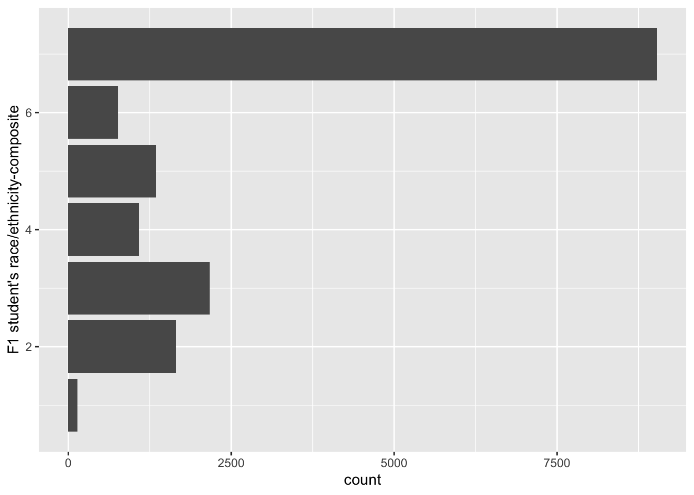
# Factor
df_els_stu_allobs_fac$f1race %>% str() Factor w/ 7 levels "Amer. Indian/Alaska Native, non-Hispanic",..: 5 2 7 3 4 4 4 7 4 3 ...
- attr(*, "label")= chr "F1 student's race/ethnicity-composite"df_els_stu_allobs_fac %>% ggplot() + geom_bar(mapping = aes(y = f1race))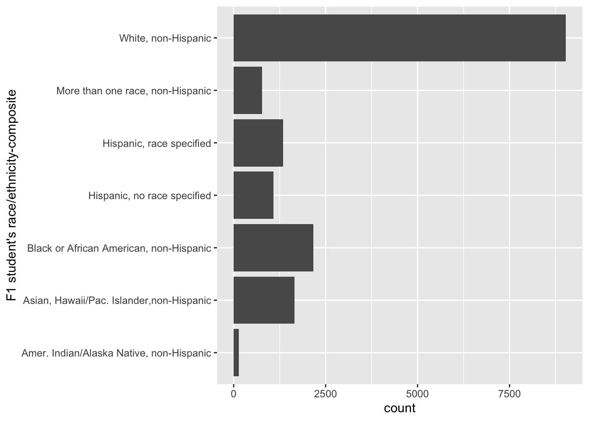
If we try using f1race from df_els_stu_allobs (haven labelled) to specify the color of the points in the following scatterplot, we will get an error:
# Haven labelled (does not work)
df_els_stu_allobs %>%
filter(unclass(x = bys34a) > 0) %>%
ggplot(mapping = aes(x = bys34a, y = f3ern2011, color = f1race)) +
geom_point()But using f1race from df_els_stu_allobs_fac (factor) works:
# Factor
df_els_stu_allobs_fac %>%
filter(unclass(x = bys34a) > 0) %>%
ggplot(mapping = aes(x = bys34a, y = f3ern2011, color = f1race)) +
geom_point()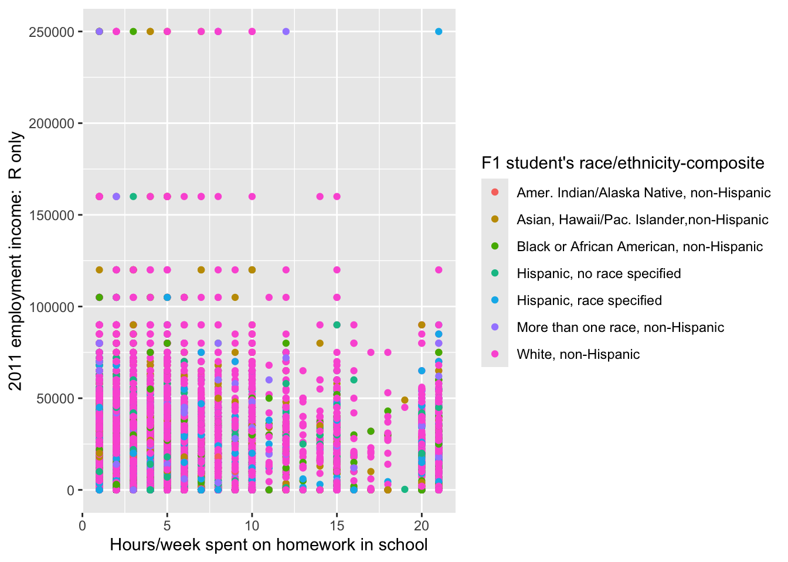
1.3 Preparing factor variables for graphing
1.3.1 Specifying factor level order
The order of a factor’s levels determines the order in which its categories usually appear on graph axes, in legends, and in facets. Here, f1race is already a factor variable, but we want to change its level order before graphing it.
Consistent with our other lectures, we use factor() within mutate():
mutate()updates thef1racecolumn in the data framex = f1racesupplies the existing values off1racetofactor()levels = c(...)lists the valid category values in the exact order we want
Before modifying a factor, inspect its existing levels and category counts. After modifying it, check them again. This helps catch misspellings or accidentally omitted values.
# Before: inspect the existing factor level order and category counts
levels(x = df_els_stu_allobs_fac$f1race)[1] "Amer. Indian/Alaska Native, non-Hispanic"
[2] "Asian, Hawaii/Pac. Islander,non-Hispanic"
[3] "Black or African American, non-Hispanic"
[4] "Hispanic, no race specified"
[5] "Hispanic, race specified"
[6] "More than one race, non-Hispanic"
[7] "White, non-Hispanic" df_els_stu_allobs_fac %>%
count(f1race, .drop = FALSE)# A tibble: 7 × 2
f1race n
<fct> <int>
1 Amer. Indian/Alaska Native, non-Hispanic 140
2 Asian, Hawaii/Pac. Islander,non-Hispanic 1654
3 Black or African American, non-Hispanic 2168
4 Hispanic, no race specified 1085
5 Hispanic, race specified 1348
6 More than one race, non-Hispanic 768
7 White, non-Hispanic 9034# Re-create f1race as a factor and specify the desired level order
df_els_stu_allobs_fac <- df_els_stu_allobs_fac %>%
mutate(
f1race = factor(
# Supply the existing variable values
x = f1race,
# List all valid values in the order we want them displayed
levels = c(
"Amer. Indian/Alaska Native, non-Hispanic",
"Black or African American, non-Hispanic",
"Asian, Hawaii/Pac. Islander,non-Hispanic",
"More than one race, non-Hispanic",
"Hispanic, race specified",
"Hispanic, no race specified",
"White, non-Hispanic"
)
)
)
# After: verify the new level order and confirm the counts
levels(x = df_els_stu_allobs_fac$f1race)[1] "Amer. Indian/Alaska Native, non-Hispanic"
[2] "Black or African American, non-Hispanic"
[3] "Asian, Hawaii/Pac. Islander,non-Hispanic"
[4] "More than one race, non-Hispanic"
[5] "Hispanic, race specified"
[6] "Hispanic, no race specified"
[7] "White, non-Hispanic" df_els_stu_allobs_fac %>%
count(f1race, .drop = FALSE)# A tibble: 7 × 2
f1race n
<fct> <int>
1 Amer. Indian/Alaska Native, non-Hispanic 140
2 Black or African American, non-Hispanic 2168
3 Asian, Hawaii/Pac. Islander,non-Hispanic 1654
4 More than one race, non-Hispanic 768
5 Hispanic, race specified 1348
6 Hispanic, no race specified 1085
7 White, non-Hispanic 9034# Use the reordered factor variable in a graph
df_els_stu_allobs_fac %>%
filter(unclass(x = bys34a) > 0) %>%
ggplot(mapping = aes(x = bys34a, y = f3ern2011, color = f1race)) +
geom_point()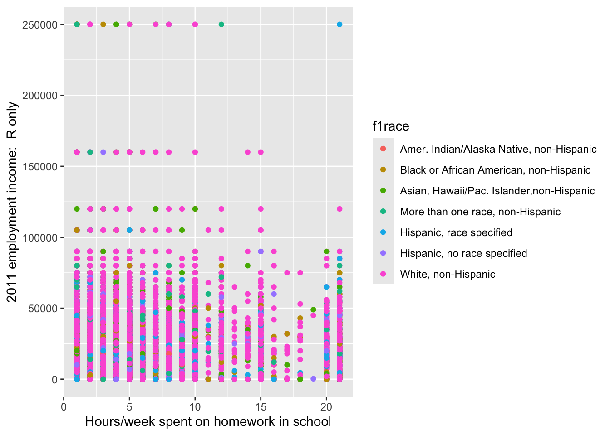
What happened?
- The category values and their counts did not change; we changed their factor level order
- The level order is the order in which the values are written inside
levels = c(...) - A specified level that does not appear in the data is retained as an unused level with zero observations
- An observed value that is not included in
levelsis converted toNA
Therefore, values in levels = c(...) must be spelled exactly as they appear in the variable. Checking levels() and count() before and after is a useful habit.
We can use this same mutate() plus factor() pattern to:
- Turn an ordinary character variable into a factor
- Modify the level order of an existing factor
For a haven-labelled variable whose value labels should become factor levels, first use haven::as_factor(), as discussed in the attributes and class lecture.
1.3.2 Recoding values and specifying factor level order
Let’s recode some variables we will use later to make them easier to work with.
The input variables f3evratt and bystexp are already factors. We will:
- Inspect their existing levels and counts
- Use
recode_values()to create shorter, easier-to-read category labels - Use
factor()to turn the recoded variables back into factors and specify their level order - Check the new variables before using them in graphs
We prepare these variables in els. Data frames we create from els later in the lecture will then contain the prepared variables.
Step 1: Inspect the input variables
When the input is a factor, recode_values() matches the factor level labels—not the underlying integer storage codes. Therefore, first use count() and attributes() to identify the exact level labels we need to recode.
# Inspect educational aspirations
els %>%
count(bystexp, .drop = FALSE)# A tibble: 10 × 2
bystexp n
<fct> <int>
1 Survey component legitimate skip/NA 305
2 Nonrespondent 648
3 Don't know 1450
4 Less than high school graduation 128
5 High school graduation or GED only 983
6 Attend or complete 2-year college/school 880
7 Attend college, 4-year degree incomplete 563
8 Graduate from college 5419
9 Obtain Master's degree or equivalent 3153
10 Obtain PhD, MD, or other advanced degree 2668attributes(x = els$bystexp)$levels
[1] "Survey component legitimate skip/NA"
[2] "Nonrespondent"
[3] "Don't know"
[4] "Less than high school graduation"
[5] "High school graduation or GED only"
[6] "Attend or complete 2-year college/school"
[7] "Attend college, 4-year degree incomplete"
[8] "Graduate from college"
[9] "Obtain Master's degree or equivalent"
[10] "Obtain PhD, MD, or other advanced degree"
$class
[1] "factor"
$label
[1] "How far in school student thinks will get-composite"# Inspect whether the student ever attended a postsecondary institution
els %>%
count(f3evratt, .drop = FALSE)# A tibble: 5 × 2
f3evratt n
<fct> <int>
1 Missing 0
2 Survey component legitimate skip/NA 459
3 Nonrespondent 2488
4 No postsecondary enrollment 1744
5 Has some postsecondary enrollment 11506attributes(x = els$f3evratt)$levels
[1] "Missing" "Survey component legitimate skip/NA"
[3] "Nonrespondent" "No postsecondary enrollment"
[5] "Has some postsecondary enrollment"
$class
[1] "factor"
$label
[1] "F3 ever attended a postsecondary institution"Step 2: Recode the values, then create the factors
The first mutate() uses recode_values() to create shorter category labels. Because our replacement values are text, recode_values() returns character variables.
The second mutate() uses factor() to:
- Convert those character variables to factors
- List all valid category values
- Specify the order in which the categories should appear in graphs
els <- els %>%
# First, create character variables with shorter category labels
mutate(
ever_college = recode_values(
x = f3evratt,
# Match each existing factor level to its new label
"Missing" ~ "Missing",
"Survey component legitimate skip/NA" ~ "Skip",
"Nonrespondent" ~ "Nonrespondent",
"No postsecondary enrollment" ~ "No college",
"Has some postsecondary enrollment" ~ "Some college"
),
ed_aspiration = recode_values(
x = bystexp,
# Match each existing factor level to its new label
"Survey component legitimate skip/NA" ~ "Skip",
"Nonrespondent" ~ "Nonresponse",
"Don't know" ~ "Don't know",
"Less than high school graduation" ~ "No HS diploma",
"High school graduation or GED only" ~ "HS diploma or GED",
"Attend or complete 2-year college/school" ~ "2-year",
"Attend college, 4-year degree incomplete" ~ "Attend college, no Bachelor's",
"Graduate from college" ~ "Bachelor's",
"Obtain Master's degree or equivalent" ~ "Master's",
"Obtain PhD, MD, or other advanced degree" ~ "Doctorate"
)
) %>%
# Next, convert the recoded variables to factors and set their level order
mutate(
ever_college = factor(
x = ever_college,
# Categories will appear in graphs in the order listed below
levels = c(
"Missing",
"Skip",
"Nonrespondent",
"No college",
"Some college"
)
),
ed_aspiration = factor(
x = ed_aspiration,
# Categories will appear in graphs in the order listed below
levels = c(
"Skip",
"Nonresponse",
"Don't know",
"No HS diploma",
"HS diploma or GED",
"2-year",
"Attend college, no Bachelor's",
"Bachelor's",
"Master's",
"Doctorate"
)
)
)Step 3: Check the new variables
Use class() and levels() to verify the class and level order. Use count(.drop = FALSE) to check the category counts, including factor levels with zero observations. Finally, compare the original and recoded variables side by side.
# Verify factor class and level order
class(x = els$ever_college)[1] "factor"levels(x = els$ever_college)[1] "Missing" "Skip" "Nonrespondent" "No college"
[5] "Some college" class(x = els$ed_aspiration)[1] "factor"levels(x = els$ed_aspiration) [1] "Skip" "Nonresponse"
[3] "Don't know" "No HS diploma"
[5] "HS diploma or GED" "2-year"
[7] "Attend college, no Bachelor's" "Bachelor's"
[9] "Master's" "Doctorate" # Verify category counts, including unused factor levels
els %>%
count(ever_college, .drop = FALSE)# A tibble: 5 × 2
ever_college n
<fct> <int>
1 Missing 0
2 Skip 459
3 Nonrespondent 2488
4 No college 1744
5 Some college 11506els %>%
count(ed_aspiration, .drop = FALSE)# A tibble: 10 × 2
ed_aspiration n
<fct> <int>
1 Skip 305
2 Nonresponse 648
3 Don't know 1450
4 No HS diploma 128
5 HS diploma or GED 983
6 2-year 880
7 Attend college, no Bachelor's 563
8 Bachelor's 5419
9 Master's 3153
10 Doctorate 2668# Compare the original and recoded variables
els %>%
select(f3evratt, ever_college, bystexp, ed_aspiration) %>%
head(n = 10)# A tibble: 10 × 4
f3evratt ever_college bystexp ed_aspiration
<fct> <fct> <fct> <fct>
1 Has some postsecondary enrollment Some college Attend or comp… 2-year
2 Has some postsecondary enrollment Some college Obtain PhD, MD… Doctorate
3 Has some postsecondary enrollment Some college Don't know Don't know
4 Has some postsecondary enrollment Some college Graduate from … Bachelor's
5 Has some postsecondary enrollment Some college Graduate from … Bachelor's
6 Has some postsecondary enrollment Some college Attend college… Attend colle…
7 Has some postsecondary enrollment Some college Don't know Don't know
8 Has some postsecondary enrollment Some college Obtain Master'… Master's
9 Nonrespondent Nonrespondent Obtain PhD, MD… Doctorate
10 Has some postsecondary enrollment Some college Obtain Master'… Master's Remember:
- Values on the left side of
~must exactly match the existing factor level labels recode_values()changes the category labels; it does not determine their plotting order- The order supplied to
levels = c(...)determines the factor level order - An observed value omitted from
levelsbecomesNA, so always check the result
2 Concepts
Basic definitions:
- Grammar
- “The fundamental principles or rules of an art or science” (Oxford English dictionary)
- In the grammar of a language, words have different parts of speech (e.g., noun, verb, adjective), with each part of speech performing a different role in a sentence
- Grammar of graphics (Wilkinson 1999)
- Principles/rules to describe and construct statistical graphics
- Layered grammar of graphics (Wickham 2010)
- Principles/rules to describe and construct statistical graphics “based around the idea of building up a graphic from multiple layers of data” (Wickham 2010, 4)
- The layered grammar of graphics decomposes a graphic into different layers
- “These are layers in a literal sense – you can think of them as transparency sheets for an overhead projector, each containing a piece of the graphic, which can be arranged and combined in a variety of ways.”
What does Wickham mean by layers? (from “Telling Stories with Data Using the Grammar of Graphics” by Liz Sander)
- Aesthetics
- Aesthetics are visual elements of the plot (e.g., lines, points, symbols, colors, axes)
- Aesthetic mappings (mappings) are visual elements of the plot determined by values of specific variables (e.g., a scatterplot where the color of each point depends on the value of the variable
race,white = color pink, Asian = color green, etc.) - In the context of visualization using ggplot, all mappings are aesthetic mappings but not all aesthetics are aesthetic mappings (i.e., determined by variable values). For example, when creating a scatterplot you may specify that the color of each point be blue.
The seven parameters of the layered grammar of graphics consists of:
- Five layers
- Dataset (data)
- Set of aesthetic mappings (mappings)
- Statistical transformation (stat)
- Geometric object (geom)
- Position adjustment (position)
- A coordinate system (coord)
- A faceting scheme (facets)
ggplot2 is an R package in the tidyverse suite used to create graphics. We use the ggplot() function to create graphs.
“In practice, you rarely need to supply all seven parameters to make a graph because ggplot2 will provide useful defaults for everything except the data, the mappings, and the geom function.” (Wickham and Grolemund 2017, chap. 3)
Syntax conveying the seven parameters of the layered grammar of graphics:
ggplot(data = <DATA>, mapping = aes(x = <X_VARIABLE>, y = <Y_VARIABLE>, ...)) +
<GEOM_FUNCTION>(
stat = <STAT>,
position = <POSITION>
) +
<COORDINATE_FUNCTION> +
<FACET_FUNCTION>2.1 Dataset (data)
Data defines the information to be visualized.
Example: Imagine a dataset where each observation is a student
- The variables of interest are hours per week spent on homework in high school (
bys34a), earnings in 2011 (f3ern2011), and student sex (f1sex)
els %>% select(stu_id, bys34a, f3ern2011, f1sex) %>% head(n = 10)# A tibble: 10 × 4
stu_id bys34a f3ern2011 f1sex
<dbl> <dbl> <dbl> <fct>
1 101101 1 4000 Female
2 101102 1 3000 Female
3 101104 -9 37000 Female
4 101105 4 1500 Female
5 101106 8 48000 Female
6 101107 7 35000 Male
7 101108 1 17000 Male
8 101109 2 68000 Male
9 101110 -9 -4 Male
10 101111 7 42000 Male - First, let’s investigate the underlying variables:
els %>% select(bys34a,f3ern2011) %>%
summarize_all(.funs = list(~ mean(x = ., na.rm = TRUE), ~ min(., na.rm = TRUE), ~ max(., na.rm = TRUE)))# A tibble: 1 × 6
bys34a_mean f3ern2011_mean bys34a_min f3ern2011_min bys34a_max f3ern2011_max
<dbl> <dbl> <dbl> <dbl> <dbl> <dbl>
1 3.65 21276. -9 -8 21 250000- Investigate values less than zero:
els %>% select(bys34a) %>% filter(bys34a<0) %>% count(bys34a)# A tibble: 4 × 2
bys34a n
<dbl> <int>
1 -9 572
2 -8 305
3 -4 648
4 -1 2els %>% select(f3ern2011) %>% filter(f3ern2011<0) %>% count(f3ern2011)# A tibble: 2 × 2
f3ern2011 n
<dbl> <int>
1 -8 459
2 -4 2488- Create version of variables that replace values less than zero with
NA:
els_v2 <- els %>%
mutate(
hw_time = if_else(
condition = bys34a < 0,
true = NA_real_,
false = as.numeric(x = bys34a)
),
earn2011 = if_else(
condition = f3ern2011 < 0,
true = NA_real_,
false = as.numeric(x = f3ern2011)
),
totloan = f3totloan
)
#check
els_v2 %>% filter(bys34a<0) %>% count(bys34a, hw_time)# A tibble: 4 × 3
bys34a hw_time n
<dbl> <dbl> <int>
1 -9 NA 572
2 -8 NA 305
3 -4 NA 648
4 -1 NA 2els_v2 %>% filter(f3ern2011<0) %>% count(f3ern2011, earn2011)# A tibble: 2 × 3
f3ern2011 earn2011 n
<dbl> <dbl> <int>
1 -8 NA 459
2 -4 NA 2488- To reduce the number of observations, we are creating a dataframe consisting of students whose parents have a PhD, MD, or advanced degree that we will use later:
els_v2 %>% count(f1pared)# A tibble: 8 × 2
f1pared n
<fct> <int>
1 Did not finish high school 1020
2 Graduated from high school or GED 3250
3 Attended 2-year school, no degree 1736
4 Graduated from 2-year school 1660
5 Attended college, no 4-year degree 1820
6 Graduated from college 3663
7 Completed Master's degree or equivalent 1927
8 Completed PhD, MD, other advanced degree 1121els_v2$f1pared %>% class()[1] "factor"els_v2$f1pared %>% attributes()$levels
[1] "Did not finish high school"
[2] "Graduated from high school or GED"
[3] "Attended 2-year school, no degree"
[4] "Graduated from 2-year school"
[5] "Attended college, no 4-year degree"
[6] "Graduated from college"
[7] "Completed Master's degree or equivalent"
[8] "Completed PhD, MD, other advanced degree"
$class
[1] "factor"
$label
[1] "F1 parent's highest level of education"# els_v2$f1pared is a factor class variable so we filter based on factor levels
els_parphd <- els_v2 %>% filter(f1pared=="Completed PhD, MD, other advanced degree")2.2 Set of aesthetic mappings (mappings)
Mapping defines how variables in a dataset are applied (mapped) to a graphic.
Example: Consider the previous dataset
- Map hours/week spent on homework to the x-axis
- Map 2011 income to the y-axis
- Map sex to the color of each point
els_v2 %>% select(stu_id, bys34a, earn2011, f1sex) %>%
rename(x = bys34a, y = earn2011, color = f1sex) %>%
head(n = 10)# A tibble: 10 × 4
stu_id x y color
<dbl> <dbl> <dbl> <fct>
1 101101 1 4000 Female
2 101102 1 3000 Female
3 101104 -9 37000 Female
4 101105 4 1500 Female
5 101106 8 48000 Female
6 101107 7 35000 Male
7 101108 1 17000 Male
8 101109 2 68000 Male
9 101110 -9 NA Male
10 101111 7 42000 Male Code
els_v2 %>%
filter(bys34a > 0) %>%
ggplot(mapping = aes(x = bys34a, y = earn2011, color = f1sex)) +
geom_point()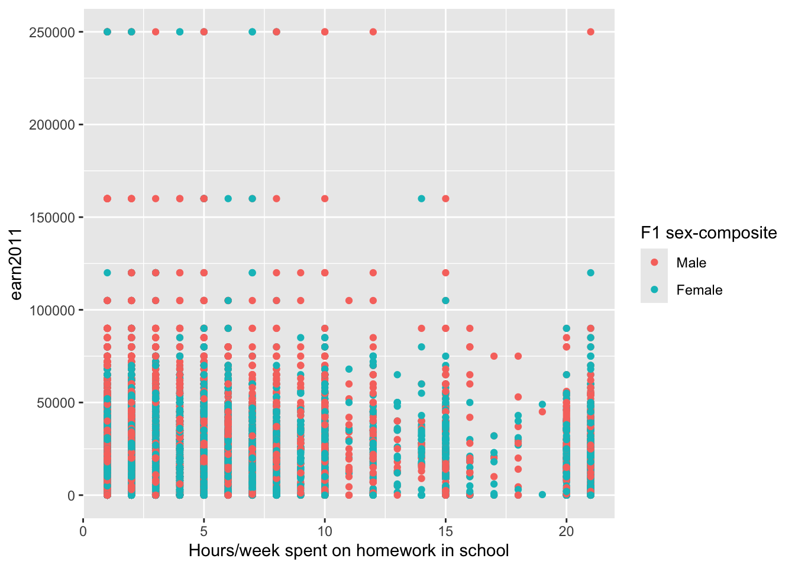
Example: Depending on the type of plot, a different set of mapping may be needed (i.e., not always x to one variable and y to another)
- Map sex to the x-axis (by default, bar plots will plot the counts, see next section)
els_v2 %>% select(stu_id, f1sex) %>%
rename(x = f1sex) %>%
head(n = 10)# A tibble: 10 × 2
stu_id x
<dbl> <fct>
1 101101 Female
2 101102 Female
3 101104 Female
4 101105 Female
5 101106 Female
6 101107 Male
7 101108 Male
8 101109 Male
9 101110 Male
10 101111 Male Code
els_v2 %>%
ggplot(mapping = aes(x = f1sex)) +
geom_bar(width = 0.6)
2.3 Statistical transformation (stat)
A statistical transformation transforms the underlying data before plotting it. Different types of plots (i.e., geom_*()) will use a different transformation by default so we often do not need to explicitly specify it.
Example: Imagine creating a scatterplot of the relationship between hours/week spent on homework (x-axis) and 2011 income (y-axis)
- When creating a scatterplot we usually do not transform the data prior to plotting
- This is the “identity” transformation (default for plots like scatterplots)
els_v2 %>% select(stu_id, bys34a, earn2011) %>% rename(x = bys34a, y = earn2011) %>%
head(n = 10)# A tibble: 10 × 3
stu_id x y
<dbl> <dbl> <dbl>
1 101101 1 4000
2 101102 1 3000
3 101104 -9 37000
4 101105 4 1500
5 101106 8 48000
6 101107 7 35000
7 101108 1 17000
8 101109 2 68000
9 101110 -9 NA
10 101111 7 42000Code
els_v2 %>%
filter(bys34a > 0) %>%
ggplot(mapping = aes(x = bys34a, y = earn2011)) +
geom_point()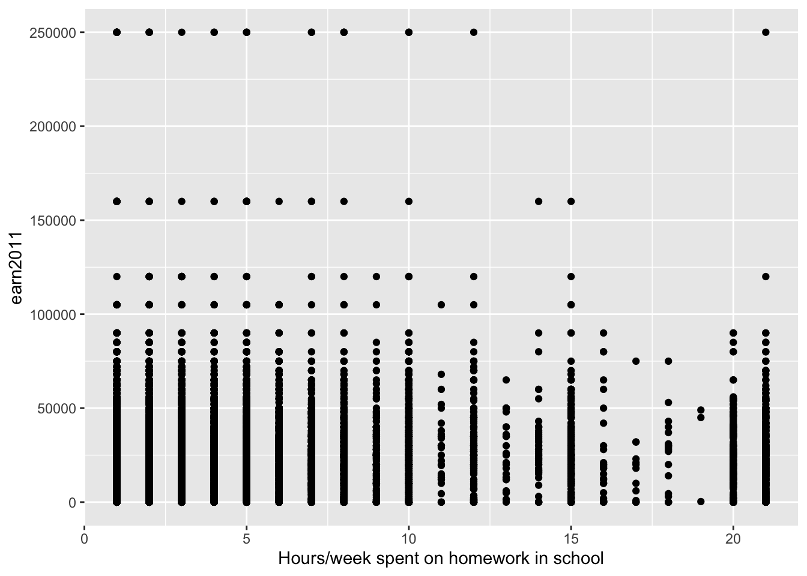
Example: Imagine creating a bar chart of the number of students by sex
- Here, we do not plot the raw data. Rather, we count the number of observations for each sex category.
- This is the “count” transformation (default for plots like barplots)
els_v2 %>% count(f1sex) # A tibble: 2 × 2
f1sex n
<fct> <int>
1 Male 8090
2 Female 8107Code
els_v2 %>%
ggplot(mapping = aes(x = f1sex)) +
geom_bar(width = 0.6)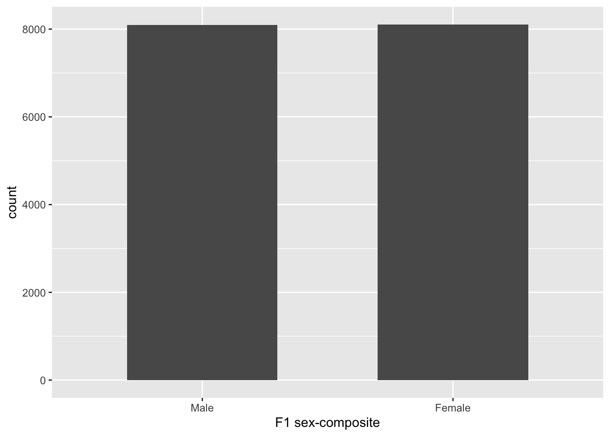
2.4 Geometric objects (geoms)
Graphs visually display data, using geometric objects like a point, line, bar, etc.
- Each geometric object in a graph is called a “geom” – they are defined as “visual marks that represent data points” (ggplot cheatsheet)
- “A geom is the geometrical object that a plot uses to represent data” (Wickham and Grolemund 2017, chap. 3)
- “People often describe plots by the type of geom that the plot uses. For example, bar charts use bar geoms, line charts use line geoms, boxplots use boxplot geoms” (Wickham and Grolemund 2017, chap. 3)
- Aesthetics are “visual attributes of the geom” (e.g., color, fill, shape, position) (Grammar of Graphics)
- Each geom can only display certain aesthetics
- For example, a “point geom” can only include the aesthetics position, color, shape, and size
- We can plot the same underlying data using different geoms (e.g., bar chart vs. pie chart)
- A single graph can layer multiple geoms (e.g., scatterplot with a “line of best fit” layered on top)
2.5 Position adjustment (position)
Position adjustment adjusts the position of visual elements in the plot so that these visual elements do not overlap with one another in ways that make the plot difficult to interpret.
Example: The dataset els contains variables on 10th graders from 2002 until 2012; there are 16197 observations, and each observation is a student.
- Create a scatterplot of the relationship between the total amount borrowed in loans (x-axis) and reported earnings for 2011 (y-axis)
- Below plot is difficult to interpret because many points overlap with one another
- Note we filtered to less than $30k borrowed in loans and less than $150K in earnings due to the large number of observations.
Code
#total amount borrowed in loans on 2011 earnings
els_v2 %>%
filter(totloan < 30000 & earn2011 < 150000) %>%
ggplot(mapping = aes(x = totloan, y = earn2011)) +
geom_point()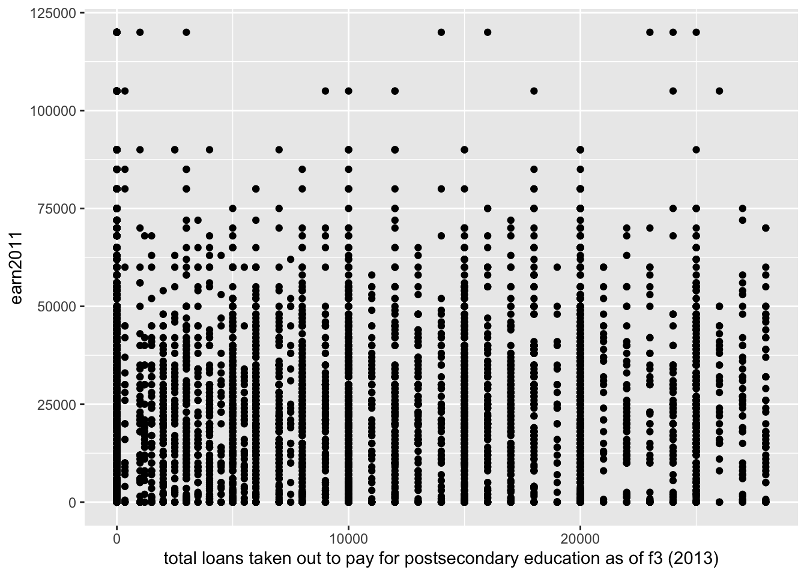
- The
jitterposition adjustment “adds a small amount of random variation to the location of each point” (from?geom_jitter)
Code
#total amount borrowed in loans on 2011 earnings
els_v2 %>%
filter(totloan < 30000 & earn2011 < 150000) %>%
ggplot(mapping = aes(x = totloan, y = earn2011)) +
geom_point(position = "jitter")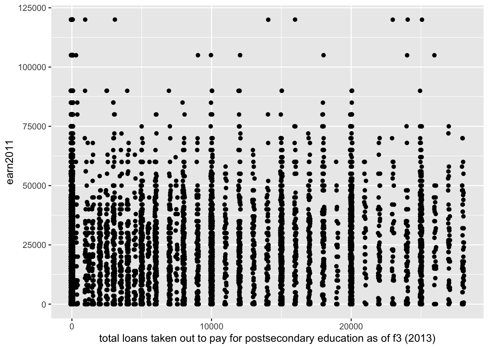
2.6 Coordinate system (coord)
“A coordinate system maps the position of objects onto the plane of the plot, and controls how the axes and grid lines are drawn. Plots typically use two coordinates (x,y), but could use any number of coordinates.” (Grammar of Graphics)
Example: Cartesian coordinate system
- Most plots use the Cartesian coordinate system
Code
vec_x <- c(1, 10)
vec_y <- c(1, 5)
coord_plot <- qplot(x = vec_x, y = vec_y, geom = "blank", xlab = NULL, ylab = NULL) +
theme_bw()
coord_plot +
ggtitle(label = "Cartesian coordinate system")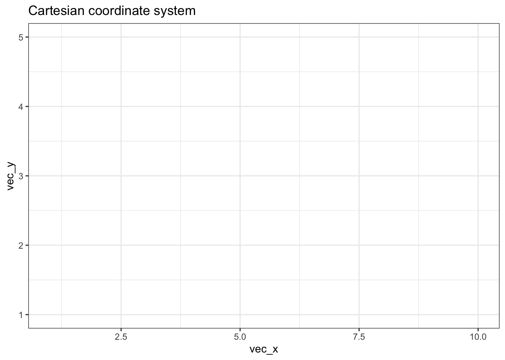
- Use
coord_fixed()to fix the “aspect ratio” (i.e., scaling) of the coordinate system. Description: - “A fixed scale coordinate system forces a specified ratio between the physical representation of data units on the axes. The ratio represents the number of units on the y-axis equivalent to one unit on the x-axis. The default, ratio = 1, ensures that one unit on the x-axis is the same length as one unit on the y-axis.”
Code
coord_plot +
coord_fixed()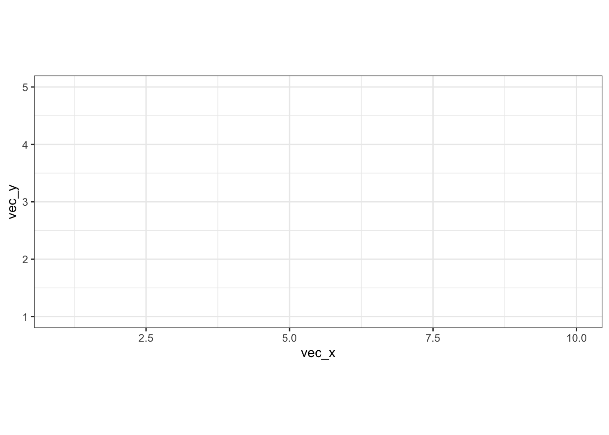
- When using the default Cartesian coordinate system, a common task is to flip the x and y axis using
coord_flip(). (From R for Data Science)
Example: Relationship between highest degree earned and the amount of total loans taken out.
Code
#filtering for those with a postsecondary degree
els_v2 %>%
filter(h_degree %in% c("Associate's","Bachelor's", "Master's", "Doctorate")) %>%
ggplot(mapping = aes(x = h_degree, y = totloan)) +
geom_boxplot() +
scale_y_continuous(labels = label_number(prefix = '$', suffix = 'K', scale = 1e-3, accuracy = 1))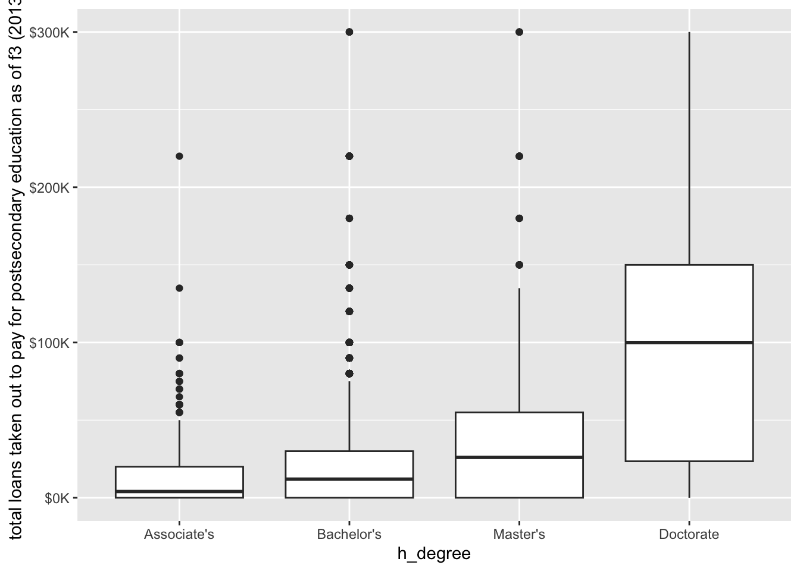
Example: Relationship between highest degree earned and the amount of total loans taken out using coord_flip().
Code
els_v2 %>%
filter(h_degree %in% c("Associate's","Bachelor's", "Master's", "Doctorate")) %>%
ggplot(mapping = aes(x = h_degree, y = totloan)) +
geom_boxplot() +
coord_flip() +
scale_y_continuous(labels = label_number(prefix = '$', suffix = 'K', scale = 1e-3, accuracy = 1))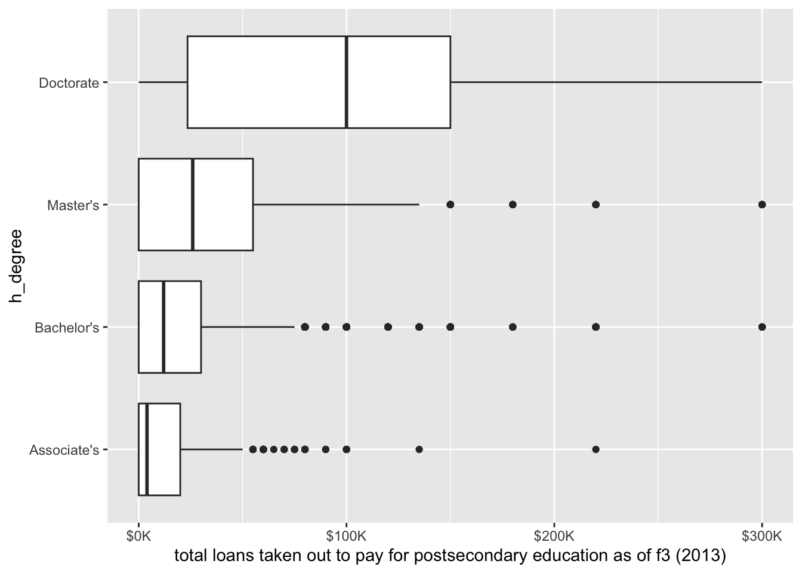
Example: Polar coordinate system
Code
coord_plot +
coord_polar() +
ggtitle(label = "Polar coordinate system")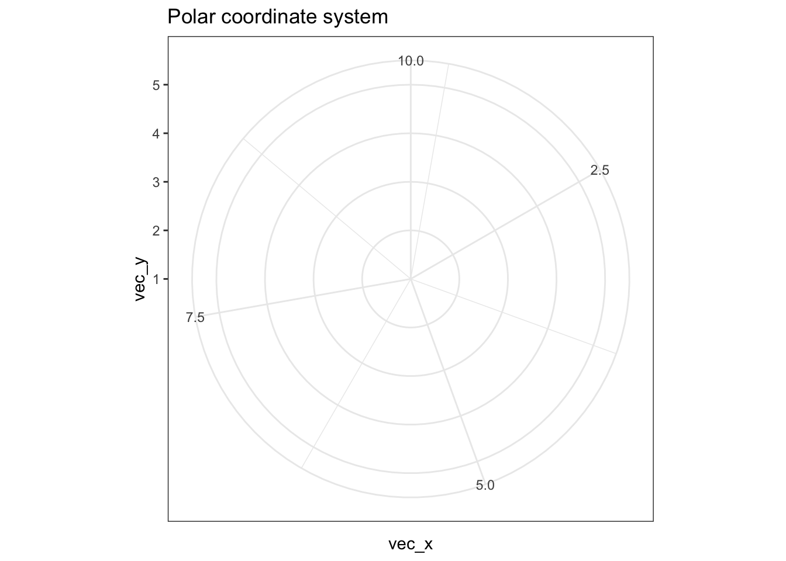
2.7 Faceting scheme (facets)
Facets are subplots that display one subset of the data. They are most commonly used to create “small multiples”
Example: Imagine creating a scatterplot of the relationship between the total amount borrowed in loans (x-axis) and earnings in 2011 (y-axis), with separate subplots for race/ethnicity.
Code
els_v2 %>%
filter(totloan < 50000 & earn2011 < 100000) %>%
ggplot() +
geom_point(mapping = aes(x = totloan, y = earn2011), position = "jitter") +
facet_wrap(facets = vars(f1race_v2), nrow = 3)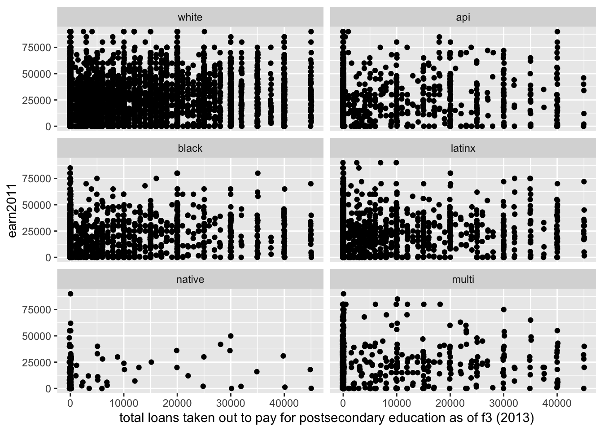
3 Creating graphs using ggplot
3.1 ggplot() and aes() functions
Show help pages for package ggplot2:
help(package = ggplot2)The ggplot() function:
?ggplot
# SYNTAX AND DEFAULT VALUES
ggplot(data = NULL, mapping = aes())- Description (from help file)
- “
ggplot()initializes a ggplot object. It can be used to declare the input data frame for a graphic and to specify the set of plot aesthetics intended to be common throughout all subsequent layers unless specifically overridden”
- “
- Arguments
data: Dataset to use for plot. If not specified inggplot()function, must be supplied in each layer added to the plot.mapping: Default list of aesthetic mappings to use for plot. If not specified, must be supplied in each layer added to the plot.
The aes() function (often called within the ggplot() function):
?aes
# SYNTAX TEMPLATE
aes(x = x_variable, y = y_variable, ...)- Description (from help file)
- “Aesthetic mappings describe how variables in the data are mapped to visual properties (aesthetics) of geoms. Aesthetic mappings can be set in
ggplot()and in individual layers.”
- “Aesthetic mappings describe how variables in the data are mapped to visual properties (aesthetics) of geoms. Aesthetic mappings can be set in
- Arguments
x, y, ...: List of name value pairs giving aesthetics to map to variables- Although ggplot2 allows the names for
xandyto be omitted, in this course we explicitly writex =andy = - All other aesthetics must be named
- Although ggplot2 allows the names for
Example: Putting ggplot() and aes() together
- Specifying
ggplot()andaes()without specifying a geom layer (e.g.,geom_point()) creates a blank ggplot - We explicitly name
mapping =to show that the object created byaes()is supplied to themappingargument ofggplot()
ggplot(data = diamonds, mapping = aes(x = carat, y = price))
- Alternatively, we can use pipes with the dataframe we want to plot, which allows us to omit the first
dataargument ofggplot():
class(x = diamonds)[1] "tbl_df" "tbl" "data.frame"diamonds %>% ggplot(mapping = aes(x = carat, y = price))
- We can also create a ggplot object and assign it to an object for later use:
diam_ggplot <- ggplot(data = diamonds, mapping = aes(x = carat, y = price))
diam_ggplot # blank ggplot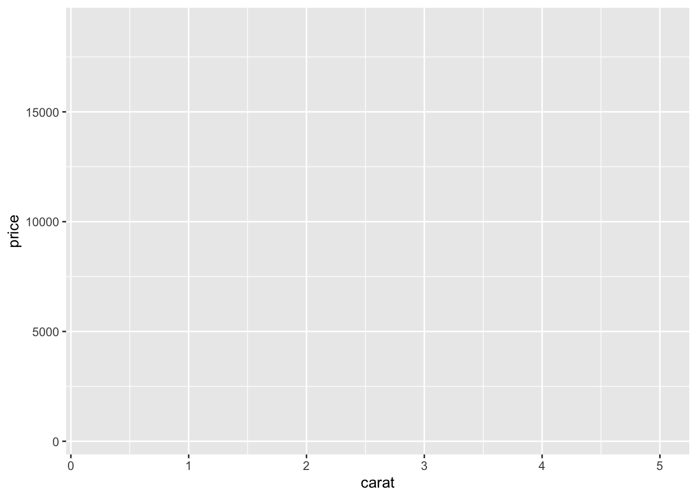
- Investigate ggplot object:
typeof(x = diam_ggplot)[1] "object"class(x = diam_ggplot)[1] "ggplot2::ggplot" "ggplot" "ggplot2::gg" "S7_object"
[5] "gg" #str(object = diam_ggplot)- Attributes of ggplot object:
attributes(x = diam_ggplot)$class
[1] "ggplot2::ggplot" "ggplot" "ggplot2::gg" "S7_object"
[5] "gg"
$S7_class
<ggplot2::ggplot> class
@ parent : <ggplot2::gg>
@ constructor: function(data, ..., layers, scales, guides, mapping, theme, coordinates, facet, layout, labels, meta, plot_env) {...}
@ validator : <NULL>
@ properties :
$ data : <ANY>
$ layers : <list>
$ scales : S3<ScalesList>
$ guides : S3<Guides>
$ mapping : <ggplot2::mapping>
$ theme : <ggplot2::theme>
$ coordinates: S3<Coord>
$ facet : S3<Facet>
$ layout : S3<Layout>
$ labels : <ggplot2::labels>
$ meta : <list>
$ plot_env : <environment>
$data
# A tibble: 53,940 × 10
carat cut color clarity depth table price x y z
<dbl> <ord> <ord> <ord> <dbl> <dbl> <int> <dbl> <dbl> <dbl>
1 0.23 Ideal E SI2 61.5 55 326 3.95 3.98 2.43
2 0.21 Premium E SI1 59.8 61 326 3.89 3.84 2.31
3 0.23 Good E VS1 56.9 65 327 4.05 4.07 2.31
4 0.29 Premium I VS2 62.4 58 334 4.2 4.23 2.63
5 0.31 Good J SI2 63.3 58 335 4.34 4.35 2.75
6 0.24 Very Good J VVS2 62.8 57 336 3.94 3.96 2.48
7 0.24 Very Good I VVS1 62.3 57 336 3.95 3.98 2.47
8 0.26 Very Good H SI1 61.9 55 337 4.07 4.11 2.53
9 0.22 Fair E VS2 65.1 61 337 3.87 3.78 2.49
10 0.23 Very Good H VS1 59.4 61 338 4 4.05 2.39
# ℹ 53,930 more rows
$layers
list()
$scales
<ggproto object: Class ScalesList, gg>
add: function
add_defaults: function
add_missing: function
backtransform_df: function
clone: function
find: function
get_scales: function
has_scale: function
input: function
map_df: function
n: function
non_position_scales: function
scales: NULL
set_palettes: function
train_df: function
transform_df: function
super: <ggproto object: Class ScalesList, gg>
$guides
<Guides[0] ggproto object>
<empty>
$mapping
Aesthetic mapping:
* `x` -> `carat`
* `y` -> `price`
$theme
<theme> Named list()
@ complete: logi FALSE
@ validate: logi TRUE
$coordinates
<ggproto object: Class CoordCartesian, Coord, gg>
aspect: function
backtransform_range: function
clip: on
default: TRUE
distance: function
draw_panel: function
expand: TRUE
is_free: function
is_linear: function
labels: function
limits: list
modify_scales: function
range: function
ratio: NULL
render_axis_h: function
render_axis_v: function
render_bg: function
render_fg: function
reverse: none
setup_data: function
setup_layout: function
setup_panel_guides: function
setup_panel_params: function
setup_params: function
train_panel_guides: function
transform: function
super: <ggproto object: Class CoordCartesian, Coord, gg>
$facet
<ggproto object: Class FacetNull, Facet, gg>
attach_axes: function
attach_strips: function
compute_layout: function
draw_back: function
draw_front: function
draw_labels: function
draw_panel_content: function
draw_panels: function
finish_data: function
format_strip_labels: function
init_gtable: function
init_scales: function
map_data: function
params: list
set_panel_size: function
setup_data: function
setup_panel_params: function
setup_params: function
shrink: TRUE
train_scales: function
vars: function
super: <ggproto object: Class FacetNull, Facet, gg>
$layout
<ggproto object: Class Layout, gg>
coord: NULL
coord_params: list
facet: NULL
facet_params: list
finish_data: function
get_scales: function
layout: NULL
map_position: function
panel_params: NULL
panel_scales_x: NULL
panel_scales_y: NULL
render: function
render_labels: function
reset_scales: function
resolve_label: function
setup: function
setup_panel_guides: function
setup_panel_params: function
train_position: function
super: <ggproto object: Class Layout, gg>
$labels
<ggplot2::labels> Named list()
$meta
list()
$plot_env
<environment: R_GlobalEnv>diam_ggplot$mappingAesthetic mapping:
* `x` -> `carat`
* `y` -> `price`diam_ggplot$labels<ggplot2::labels> Named list()3.2 Adding geometric layers
Adding a geometric layer to a ggplot object dictates how observations are displayed in the plot.
- Geometric layers are specified using “geom functions”
- There are many different geom functions:
geom_point(): creates a scatterplotgeom_bar(): creates a bar chart- etc.
3.2.1 Scatterplots using geom_point()
Scatterplots are most useful for showing the relationship between two continuous variables.
Example: Scatterplot of the relationship between carat and price, using the diamonds dataset
#ggplot(data = diamonds, mapping = aes(x = carat, y = price)) + geom_point()
ggplot(data = diamonds, mapping = aes(x = carat, y = price)) + geom_point()
- If we already created and assigned a ggplot object, we can use that object to create the plot:
diam_ggplot + geom_point()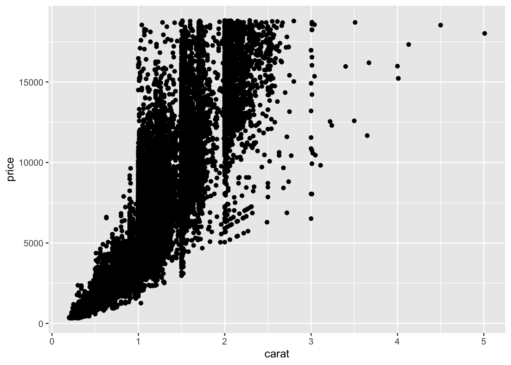
Example: Scatterplot of the hours/week spent on homework (bys34a) and 2011 earnings (f3ern2011), using the els dataset
- Plot the scatterplot:
ggplot(data = els_parphd, mapping = aes(x = hw_time, y = earn2011)) + geom_point()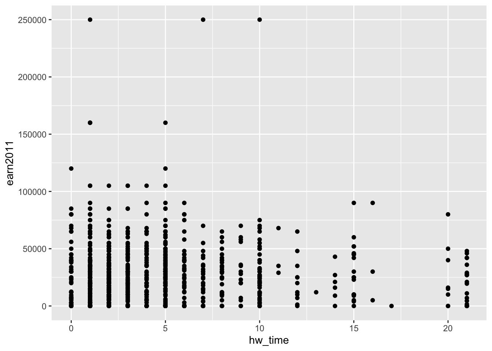
Example: Scatterplot of the relationship between parent income (parent_income) and student earnings in 2011 (earn2011), using the els_parphd dataset
- Color of points determined by type race/ethnicity (
f1race_v2):
els_parphd %>%
ggplot(mapping = aes(x = parent_income, y = earn2011, color = f1race_v2)) +
geom_point(position = "jitter")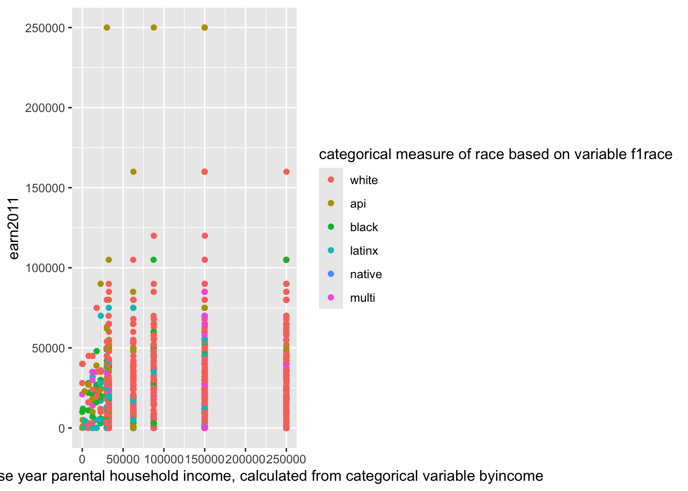
- Alternatively, the
coloraesthetic can be specified withingeom_point():
els_parphd %>%
ggplot(mapping = aes(x = parent_income, y = earn2011)) +
geom_point(position = "jitter", mapping = aes(color = f1race_v2))The geom_point() function:
?geom_point
# SYNTAX AND DEFAULT VALUES
geom_point(mapping = NULL, data = NULL, stat = "identity",
position = "identity", ..., na.rm = FALSE, show.legend = NA,
inherit.aes = TRUE)- note that the default statistical transformation is
stat = "identity"- that is, we simply plot values of
xandyon the Cartesian coordinate system; we don’t perform some kind of statistical transformation before plotting
- that is, we simply plot values of
- The
mappingargument determines Aesthetics, like this:geom_point(mapping = aes(...))
- Aesthetics previously stated from
ggplot(mapping = aes(...))will be carried forward unless you explicitly change them withingeom_point(mapping = aes(...)) - For any geometric layer function (e.g.,
geom_point,geom_bar,geom_boxplot), the help file will tell you which aesthetics the function will accept- Aesthetics:
geom_point()understands (i.e., accepts) the following aesthetics (required aesthetics in bold)x,y,alpha,colour,fill,group,shape,size,stroke
- Note: Other geom functions (e.g.,
geom_bar()) accepts a different set of aesthetics
- Aesthetics:
Student Task: Using the els_parphd dataset, create a scatterplot of the relationship between hours/week spent on homework (hw_time) on the x-axis and 2011 earnings (earn2011) on the y-axis, with the color of points determined by sex (f1sex)
Solution
ggplot(data = els_parphd, mapping = aes(x = hw_time, y = earn2011, color = f1sex)) + geom_point()3.2.2 Smoothed prediction lines using geom_smooth()
Why use geom_smooth()?
- The biggest problem with scatterplots is “overplotting.” That is, when you plot many observations, points may be plotted on top of one another and it becomes difficult to visually discern the relationship:
ggplot(data = els_v2, mapping = aes(x = hw_time, y = earn2011)) + geom_point()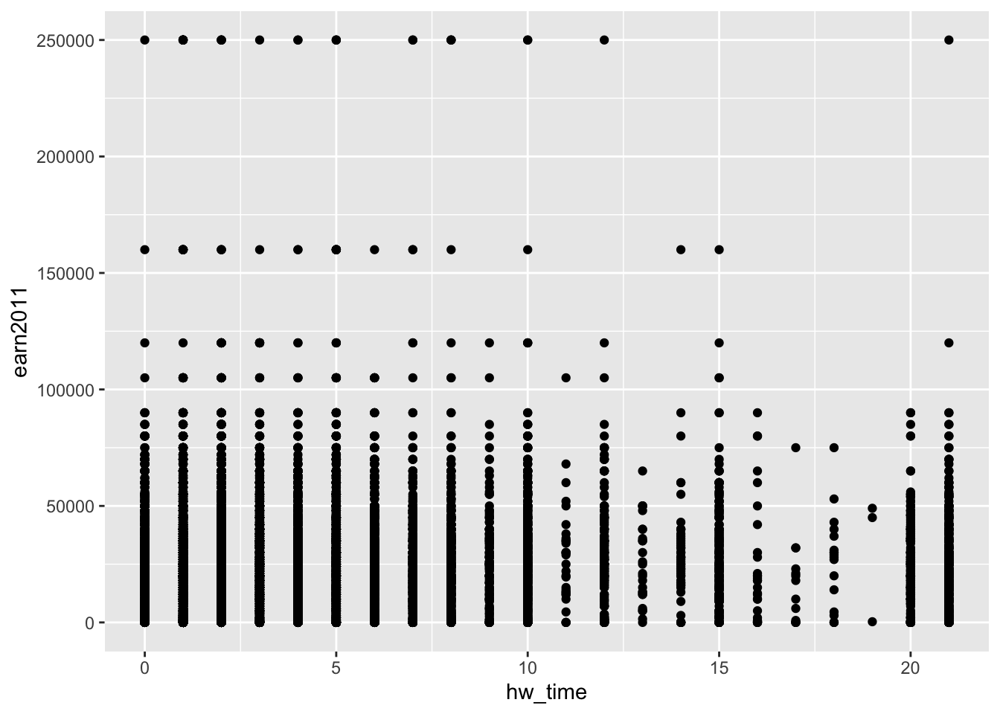
- Instead, using
geom_smooth()creates smoothed prediction lines with shaded confidence intervals:
ggplot(data = els_v2, mapping = aes(x = hw_time, y = earn2011)) + geom_smooth()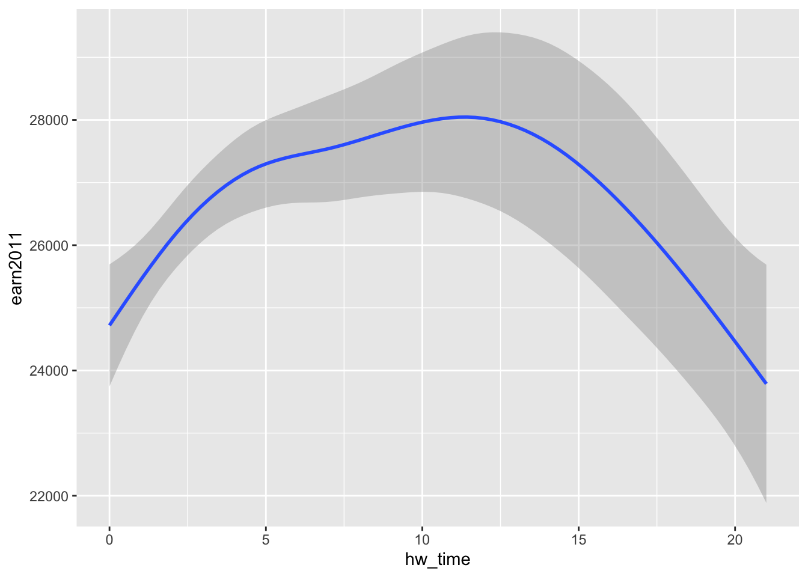
The geom_smooth() function:
?geom_smooth
# SYNTAX AND DEFAULT VALUES
geom_smooth(mapping = NULL, data = NULL, stat = "smooth",
position = "identity", ..., method = "auto", formula = y ~ x,
se = TRUE, na.rm = FALSE, show.legend = NA, inherit.aes = TRUE)- Arguments
- Note default “statistical transformation” (
stat), as compared to that ofgeom_point():stat = "smooth"forgeom_smooth()stat = "identity"forgeom_point()
- Note default “statistical transformation” (
- Aesthetics:
geom_smooth()accepts the following aesthetics (required aesthetics in bold)x,y,alpha,colour,fill,group,linetype,size,weight,ymax,ymin
Example: Smoothed prediction lines for hours/week spent on homework (bys34a) versus 2011 earnings (earn2011), using the els dataset
- This code produces same plot as above, when aesthetics were specified in
ggplot():
ggplot(data = els_v2) + geom_smooth(mapping = aes(x = hw_time, y = earn2011))
- Use
groupaesthetic to create separate prediction lines by sex (f1sex):
# first, let's get a sense of how much time doing homework for most students
els_v2 %>%
group_by(f1sex) %>%
summarize(
mean_hw = mean(x = hw_time, na.rm = TRUE),
p25_hw = quantile(x = hw_time, probs = 0.25, na.rm = TRUE),
p50_hw = quantile(x = hw_time, probs = 0.50, na.rm = TRUE),
p75_hw = quantile(x = hw_time, probs = 0.75, na.rm = TRUE),
p90_hw = quantile(x = hw_time, probs = 0.90, na.rm = TRUE),
)# A tibble: 2 × 6
f1sex mean_hw p25_hw p50_hw p75_hw p90_hw
<fct> <dbl> <dbl> <dbl> <dbl> <dbl>
1 Male 4.46 1 3 5 10
2 Female 4.97 1 3 6 12#ggplot(data = els_v2, mapping = aes(x = hw_time, y = earn2011, group = as_factor(x = f1sex))) + geom_smooth()
ggplot(data = els_v2) + geom_smooth(mapping = aes(x = hw_time, y = earn2011, group = f1sex))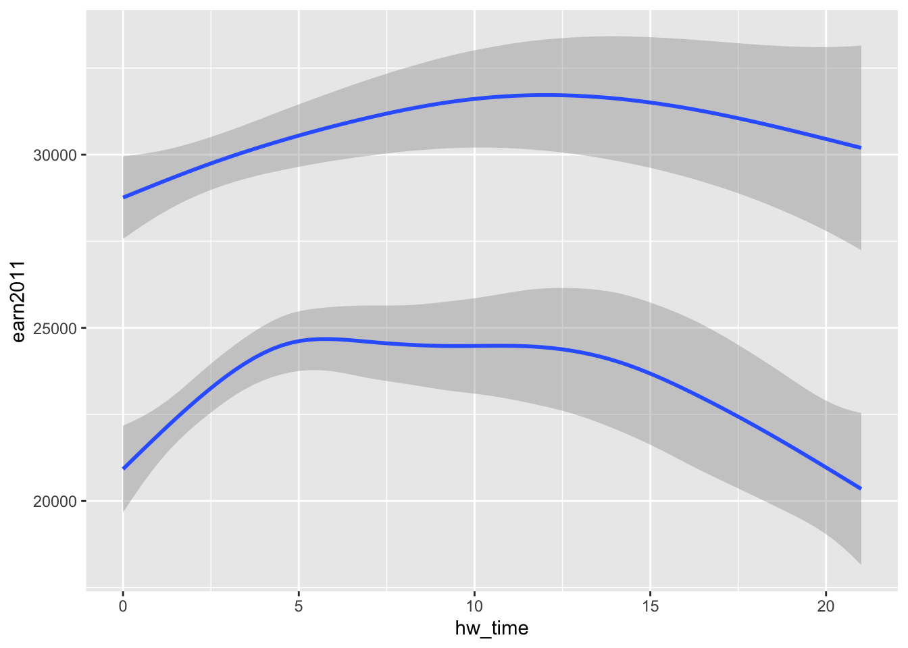
- Alternatively, we could produce the same plot by specifying all aesthetics – including the
groupaesthetic – within theggplot()function rather than thegeom_smooth()function:
ggplot(data = els_v2, mapping = aes(x = hw_time, y = earn2011, group = f1sex)) + geom_smooth()
- Use
linetypeaesthetic to create separate prediction lines (with different line styles) by sex (f1sex):
#ggplot(data = els_v2, mapping = aes(x = hw_time, y = earn2011, linetype = as_factor(x = f1sex))) + geom_smooth()
ggplot(data = els_v2) + geom_smooth(mapping = aes(x = hw_time, y = earn2011, linetype = f1sex))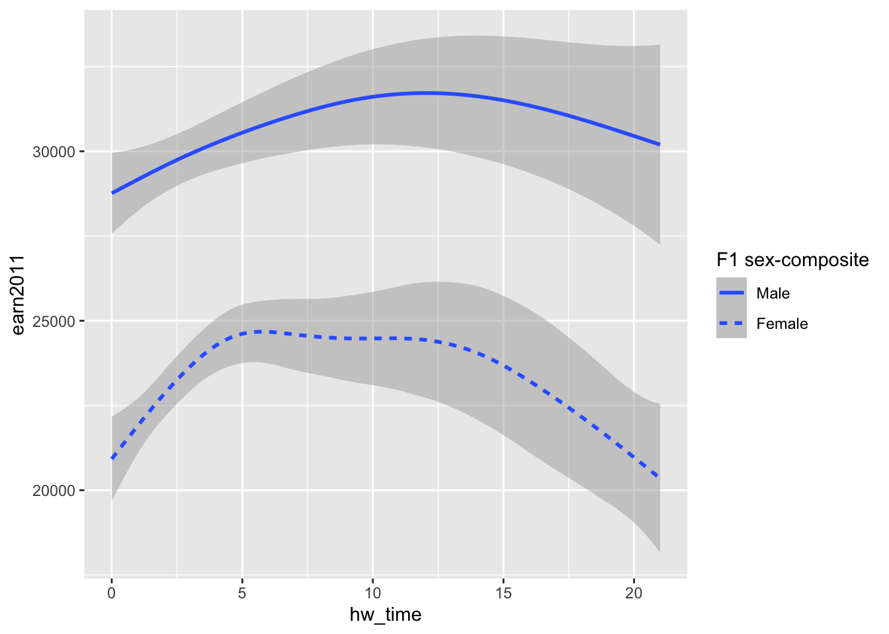
- Use
coloraesthetic to create separate prediction lines (with different colors) by sex (f1sex):
#ggplot(data = els_v2, mapping = aes(x = hw_time, y = earn2011, color = as_factor(x = f1sex))) + geom_smooth()
ggplot(data = els_v2) + geom_smooth(mapping = aes(x = hw_time, y = earn2011, color = f1sex))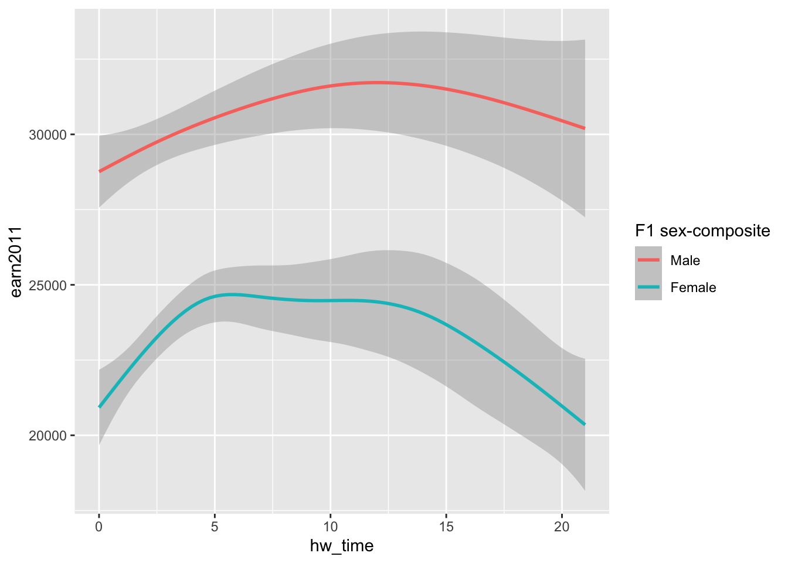
3.2.3 Plotting multiple geom layers
Example: Layer smoothed prediction lines (geom_smooth()) on top of scatterplot (geom_point())
ggplot(data = els_v2) +
geom_point(mapping = aes(x = hw_time, y = earn2011)) +
geom_smooth(mapping = aes(x = hw_time, y = earn2011))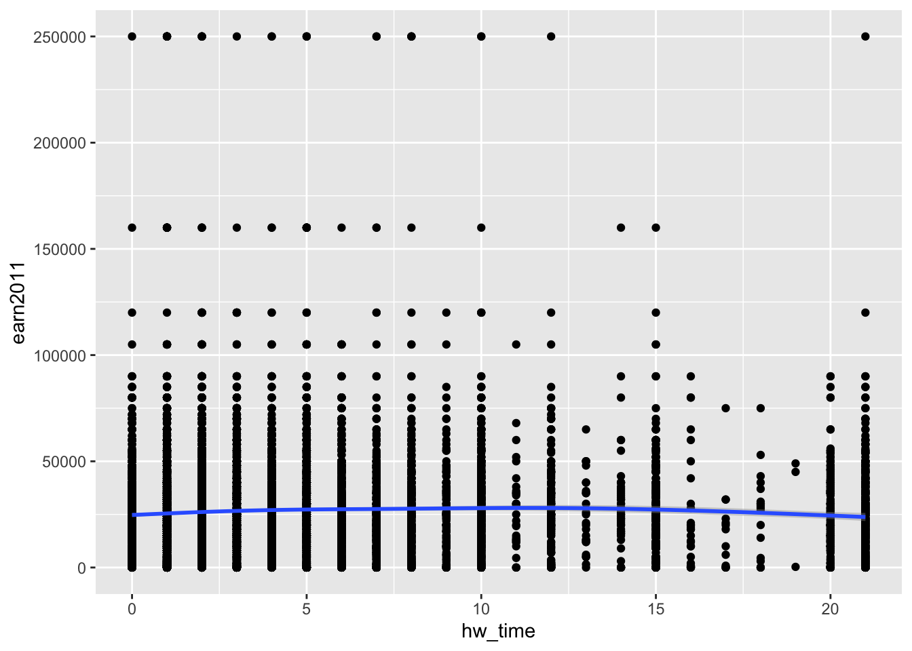
- Equivalently, the same plot can be created using this syntax:
ggplot(data = els_v2, mapping = aes(x = hw_time, y = earn2011)) +
geom_point() +
geom_smooth()
- Adjust x-axis and y-axis limits by using
+ xlim()and+ ylim():
ggplot(data = els_v2, mapping = aes(x = hw_time, y = earn2011)) +
geom_point() +
geom_smooth() +
xlim(c(0,21)) + ylim(c(0,100000))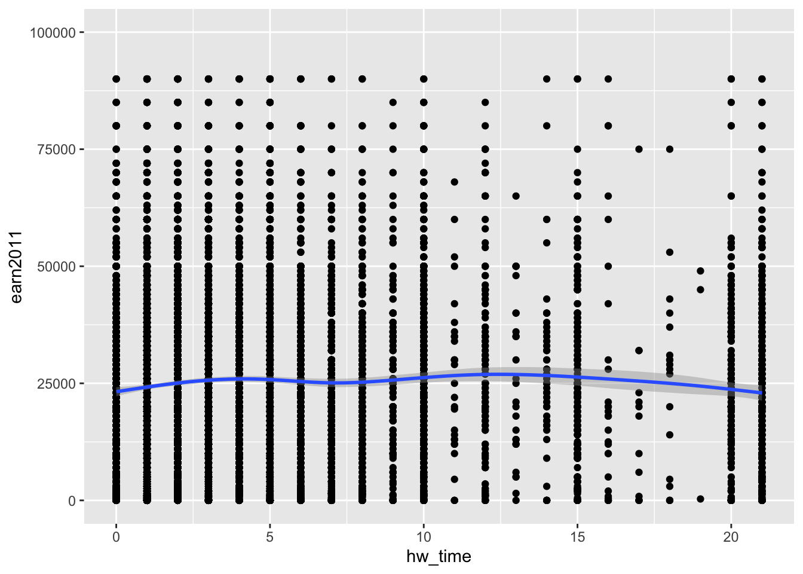
- Let’s try smaller y-axis limits:
- Note. Observations with income values above the y-axis limit are removed from the plot. This includes being removed from the calculation of the smooted prediction line
ggplot(data = els_v2, mapping = aes(x = hw_time, y = earn2011)) +
geom_point() +
geom_smooth() +
xlim(c(0,21)) + ylim(c(0,35000))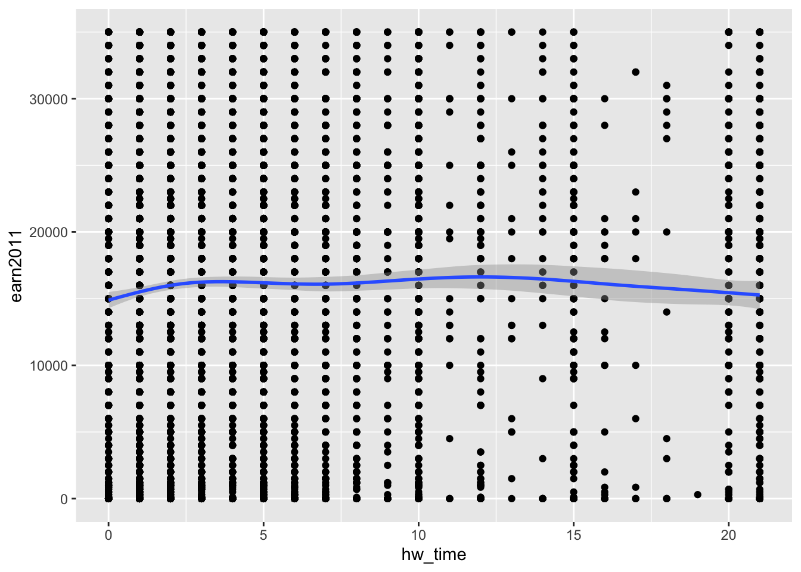
- Layer smoothed prediction lines with different line types by sex (
f1sex) on top of scatterplot with different point colors by sex:
ggplot(data = els_v2) +
geom_point(mapping = aes(x = hw_time, y = earn2011, color = f1sex)) +
geom_smooth(mapping = aes(x = hw_time, y = earn2011, linetype = f1sex)) +
xlim(c(0,21)) + ylim(c(0,100000))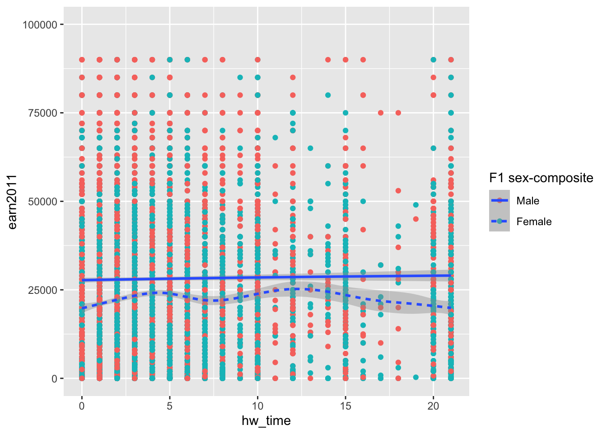
3.2.4 Bar charts using geom_bar() and geom_col()
Bar charts are used to plot a single, discrete variable.
- X-axis typically represents a categorical variable (e.g,. race, sex, institutional type)
- Each value of the categorical variable is a “group”
- Y-axis often represents the number of cases in a group (or the proportion of cases in a group)
- But height of bar could also represent mean value for a group or some other summary statistic (e.g., min, max, std)
Two geom functions to create bar charts:
geom_bar(): The height of each bar represents the number of cases (i.e., observations) in the group- Statistical transformation = “count”
- Y-value for a group is the number of cases in the group
- Use
geom_bar()when using (for example) student-level data and you don’t want to summarize student-level data prior to creating the chart
- Statistical transformation = “count”
geom_col(): The height of each bar represents the value of some variable for the group- Statistical transformation = “identity”
- Y-value for a group is the value of a variable in the dataframe
- Use
geom_col()when you have already created an object of summary statistics (e.g., counts, mean value, etc.)
- Statistical transformation = “identity”
The geom_bar() and geom_col() functions:
?geom_bar
# SYNTAX AND DEFAULT VALUES
geom_bar(mapping = NULL, data = NULL, stat = "count",
position = "stack", ..., width = NULL, binwidth = NULL,
na.rm = FALSE, show.legend = NA, inherit.aes = TRUE)
?geom_col
# SYNTAX AND DEFAULT VALUES
geom_col(mapping = NULL, data = NULL, position = "stack", ...,
width = NULL, na.rm = FALSE, show.legend = NA,
inherit.aes = TRUE)- Both
geom_barandgeom_colaccept the following aesthetics:- x, y, alpha, colour, fill, group, linetype, size
Example: Bar chart with the variable cut (e.g., “Fair,” “Good,” “Ideal”) as x-axis and number of diamonds as y-axis, using the diamonds dataset
- Essentially, you are being asked to create a bar chart from the following frequency count:
diamonds %>% count(cut)# A tibble: 5 × 2
cut n
<ord> <int>
1 Fair 1610
2 Good 4906
3 Very Good 12082
4 Premium 13791
5 Ideal 21551Method 1: Create bar chart using geom_bar()
- note:
geom_bar()usesstat = "count"
ggplot(data = diamonds, mapping = aes(x = cut)) +
geom_bar()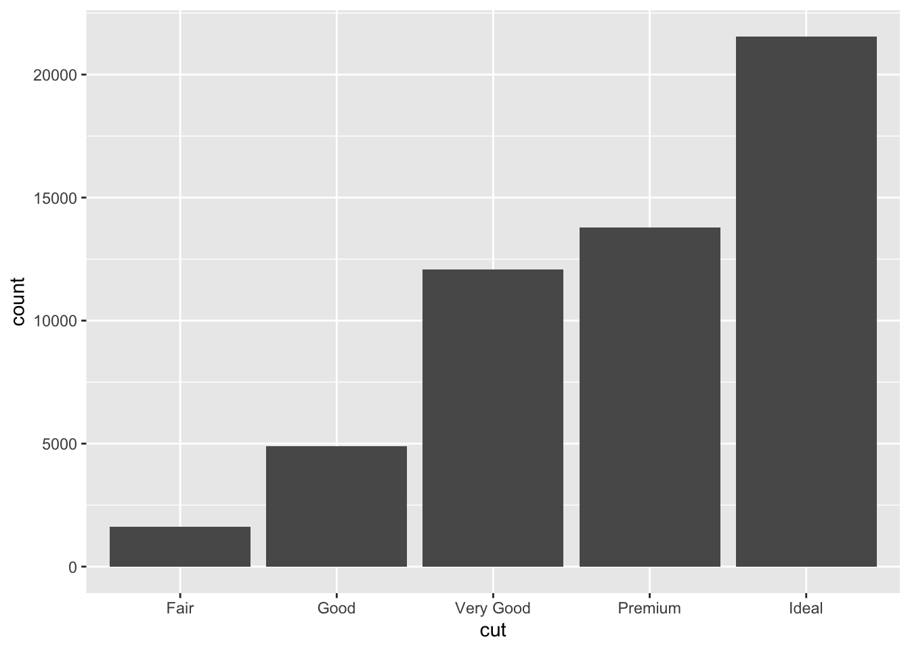
Method 2: Create bar chart using geom_col()
By contrast, help file says geom_col() uses ” uses stat_identity(): it leaves the data as is.”
- So before we create chart using
geom_col()we create an object that contains the frequency count for the variablecut:
cut_count <- diamonds %>% count(cut)
cut_count# A tibble: 5 × 2
cut n
<ord> <int>
1 Fair 1610
2 Good 4906
3 Very Good 12082
4 Premium 13791
5 Ideal 21551cut_count %>% str()tibble [5 × 2] (S3: tbl_df/tbl/data.frame)
$ cut: Ord.factor w/ 5 levels "Fair"<"Good"<..: 1 2 3 4 5
$ n : int [1:5] 1610 4906 12082 13791 21551- Note that the object
cut_countis just a data frame with two variables:cutis a factor variable with five levelsnis an integer variable, showing the number of observations for each level ofcut
- Next, use
ggplot() + geom_colto plot the data from the objectcut_count:
ggplot(data = cut_count, mapping = aes(x = cut, y = n)) +
geom_col()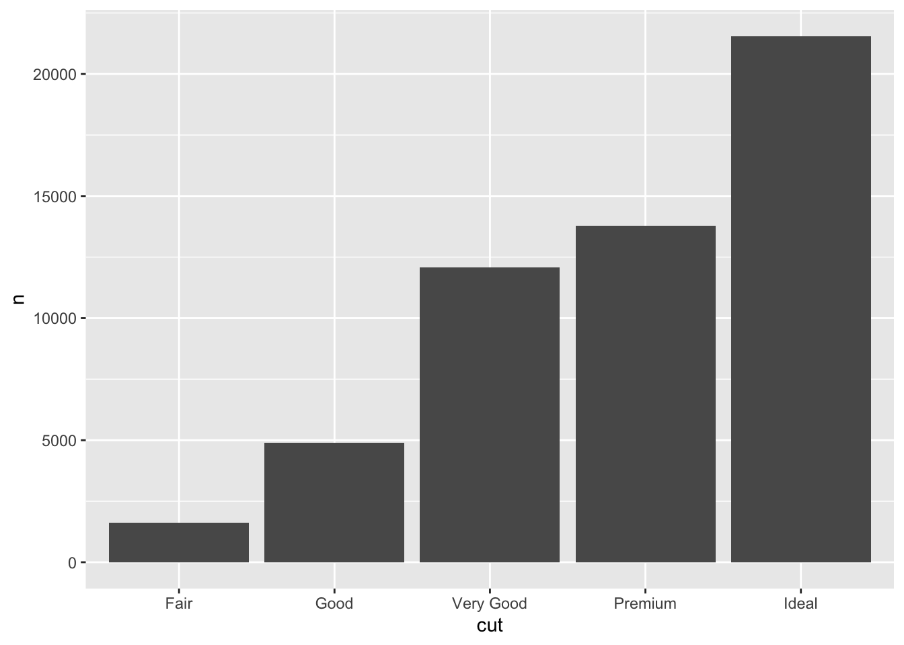
- note: if we didn’t specify the aesthetic
y = nwe would get an error becauseyis a required aesthetic forgeom_col()
ggplot(data = cut_count, mapping = aes(x = cut)) +
geom_col()- Alternatively, we can use pipes to create the plot without creating a separate
cut_countobject first:
#diamonds %>% count(cut) %>% str()
diamonds %>% count(cut) %>% str()tibble [5 × 2] (S3: tbl_df/tbl/data.frame)
$ cut: Ord.factor w/ 5 levels "Fair"<"Good"<..: 1 2 3 4 5
$ n : int [1:5] 1610 4906 12082 13791 21551diamonds %>% count(cut) %>% ggplot(mapping = aes(x = cut, y = n)) +
geom_col()
Student Task: Using the els_parphd dataset, create a bar chart with the variable “ever attended postsecondary education” (ever_college) as x-axis and number of students as y-axis
Solution
- Essentially, you are being asked to create a bar chart from the following frequency count:
els_parphd %>% count(ever_college)# A tibble: 4 × 2
ever_college n
<fct> <int>
1 Skip 38
2 Nonrespondent 96
3 No college 34
4 Some college 953Method 1: Create bar chart using geom_bar()
ggplot(data = els_parphd, mapping = aes(x = ever_college)) +
geom_bar()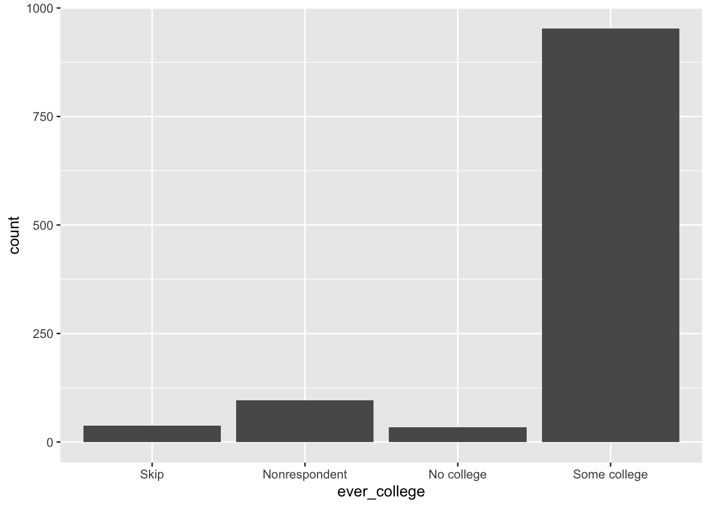
- Additionally, we can use pipes to filter values of
ever_collegebefore plotting:
#check variable f3evratt
typeof(x = els_parphd$ever_college)[1] "integer"class(x = els_parphd$ever_college)[1] "factor"str(object = els_parphd$ever_college) Factor w/ 5 levels "Missing","Skip",..: 5 5 5 5 5 5 4 3 5 5 ...attributes(x = els_parphd$ever_college)$levels[1] "Missing" "Skip" "Nonrespondent" "No college"
[5] "Some college" els_parphd %>% filter(ever_college %in% c('No college','Some college')) %>% ggplot(mapping = aes(x = ever_college)) +
geom_bar()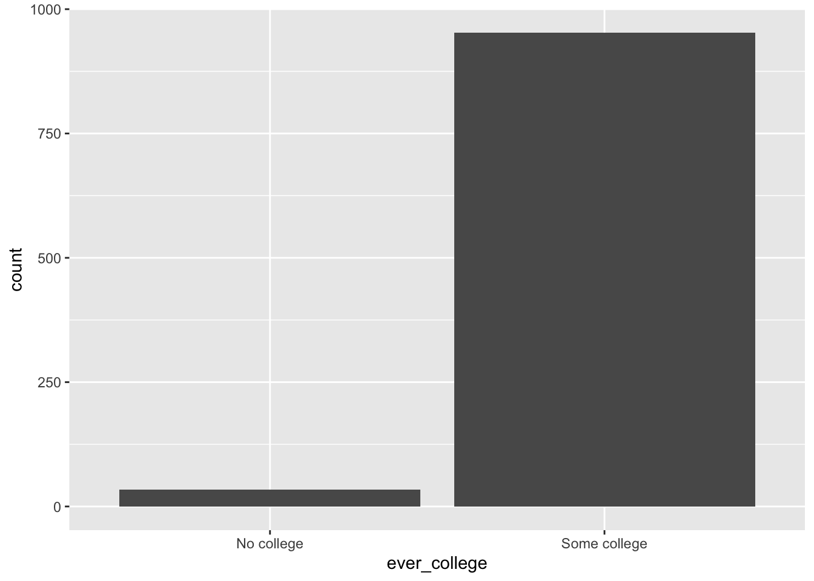
Method 2: Create bar chart using geom_col()
els_parphd %>%
# filter to remove missing values
filter(ever_college %in% c('No college','Some college')) %>%
# use count() to create summary statistics object
count(ever_college) %>%
# plot summary statistic object
ggplot(mapping = aes(x = ever_college, y = n)) + geom_col()3.3 Small multiples using faceting
Facets divide a plot into subplots based on the values of one or more discrete variables. They are most commonly used to create “small multiples”
Two functions to split your plots into facets:
facet_grid(): Display subplots in grid format, where rows and columns are determined by the faceting variable(s)facet_grid()is most useful when you have two discrete variables, and all combinations of the variables exist in the data
facet_wrap(): Display all subplots side-by-side, but can be wrapped to fill multiple rowsfacet_wrap()generally has better use of screen space, and you can specify the number of plots in each row or column
The facet_grid() and facet_wrap() functions:
?facet_grid
# SYNTAX TEMPLATE
facet_grid(
rows = vars(row_variable),
cols = vars(column_variable)
)
?facet_wrap
# SYNTAX TEMPLATE
facet_wrap(
facets = vars(facet_variable),
nrow = NULL,
ncol = NULL
)Specifying which variable(s) to facet your plot on:
facet_grid()- Since
facet_grid()arranges subplots in a grid format, we need to specify how we define the rows and columns - Pass variables to the
rowsandcolsarguments usingvars()facet_grid(rows = vars(<var_1>), cols = vars(<var_2>)): facet into both rows and columnsfacet_grid(rows = vars(<var_1>)): facet into rows onlyfacet_grid(cols = vars(<var_1>)): facet into columns only
- Since
facet_wrap()- Pass variables to the
facetsargument usingvars()facet_wrap(facets = vars(<var_1>)): facet by one variablefacet_wrap(facets = vars(<var_1>, <var_2>)): facet on the combinations of two variables
- Pass variables to the
3.3.1 Faceting by one variable
Example: Scatterplot of the relationship between parent income (parent_income) and student earnings in 2011 (earn2011), faceted by if student ever enrolled in a postsecondary institution (ever_college), from the els_parphd dataset.
Method 1: Faceting using facet_grid()
- For one variable, you can choose to facet into rows or columns:
# Facet into rows
els_parphd %>%
filter(ever_college %in% c("No college", "Some college") & parent_income < 150000 & earn2011 < 150000) %>%
ggplot(mapping = aes(x = parent_income, y = earn2011)) +
geom_point(position = "jitter") +
facet_grid(rows = vars(ever_college))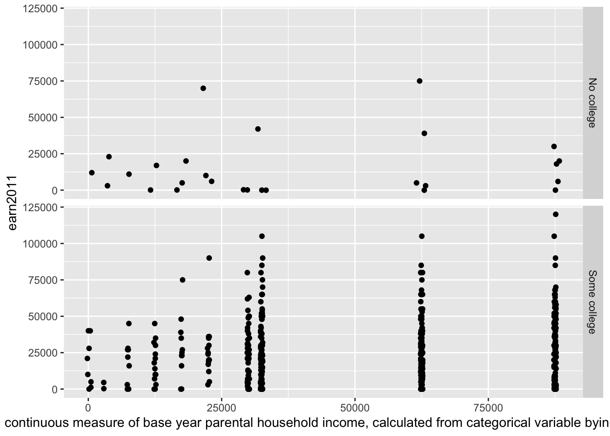
# Facet into columns
els_parphd %>%
filter(ever_college %in% c("No college", "Some college") & parent_income < 150000 & earn2011 < 150000) %>%
ggplot(mapping = aes(x = parent_income, y = earn2011)) +
geom_point(position = "jitter") +
facet_grid(cols = vars(ever_college))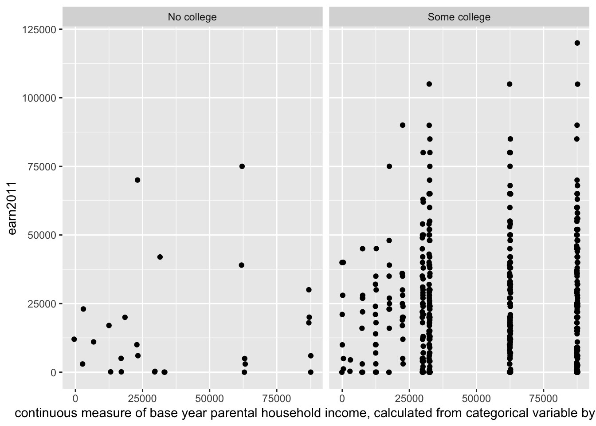
Method 2: Faceting using facet_wrap()
- Unlike
facet_grid(),facet_wrap()is not restricted to either rows or columns:
els_parphd %>%
filter(ever_college %in% c("No college", "Some college") & parent_income < 150000 & earn2011 < 150000) %>%
ggplot(mapping = aes(x = parent_income, y = earn2011)) +
geom_point() +
facet_wrap(facets = vars(ever_college))- But we are free to set the number of rows or columns if we wanted:
els_parphd %>%
filter(ever_college %in% c("No college", "Some college") & parent_income < 150000 & earn2011 < 150000) %>%
ggplot(mapping = aes(x = parent_income, y = earn2011)) +
geom_point() +
facet_wrap(facets = vars(ever_college), nrow = 2)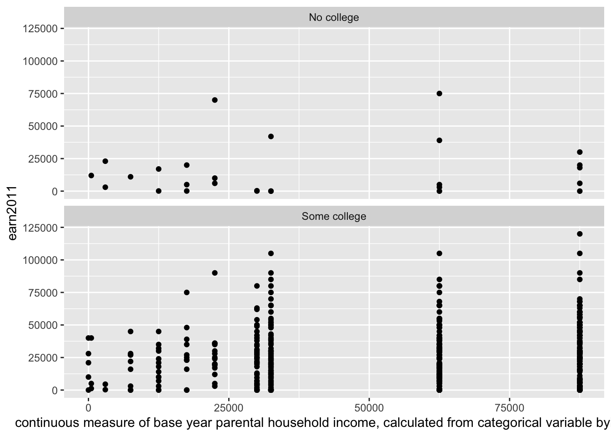
els_parphd %>%
filter(ever_college %in% c("No college", "Some college") & parent_income < 150000 & earn2011 < 150000) %>%
ggplot(mapping = aes(x = parent_income, y = earn2011)) +
geom_point(position = "jitter") +
facet_wrap(facets = vars(ever_college), ncol = 1)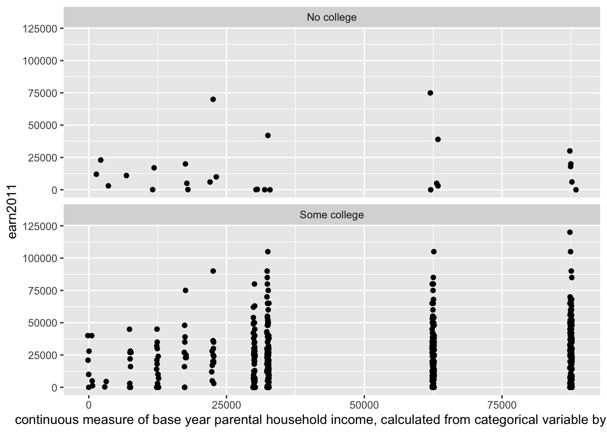
3.3.2 Faceting by two variables
Example: Scatterplot of the relationship between parent income (parent_income) and student earnings in 2011 (earn2011), faceted by if student ever enrolled in a postsecondary institution (ever_college) and educational aspirations (ed_aspiration), from the els_parphd dataset.
Method 1: Faceting using facet_grid()
- For example, we can make the rows based on
ever_collegeand the columns based oned_aspiration:
els_parphd %>%
filter(ever_college %in% c("No college", "Some college")
& ed_aspiration %in% c("Don't know","No HS diploma", "HS diploma or GED", "2-year", "Attend college, no Bachelors ", "Bachelor's", "Master's", "Doctorate") & parent_income < 150000 & earn2011 < 150000) %>%
ggplot(mapping = aes(x = parent_income, y = earn2011)) +
geom_point(position = "jitter") +
facet_grid(rows = vars(ever_college), cols = vars(ed_aspiration)) 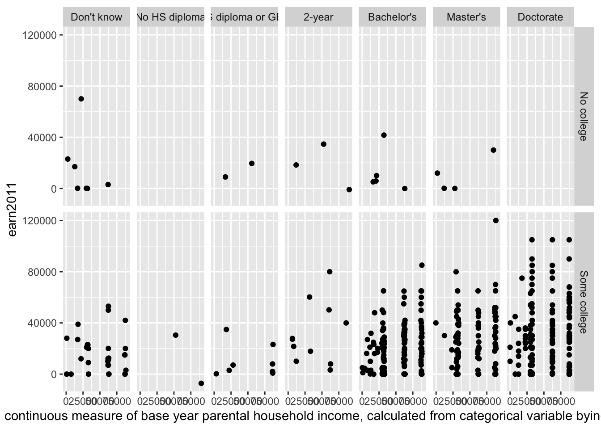
Method 2: Faceting using facet_wrap()
- Since
facet_wrap()is not defined by rows and columns, it omits any subplots that do not display any data:
els_parphd %>%
filter(ever_college %in% c("No college", "Some college")
& ed_aspiration %in% c("Don't know","No HS diploma", "HS diploma or GED", "2-year", "Attend college, no Bachelors ", "Bachelor's", "Master's", "Doctorate") & parent_income < 150000 & earn2011 < 150000) %>%
ggplot(mapping = aes(x = parent_income, y = earn2011)) +
geom_point(position = "jitter") +
facet_wrap(facets = vars(ever_college, ed_aspiration))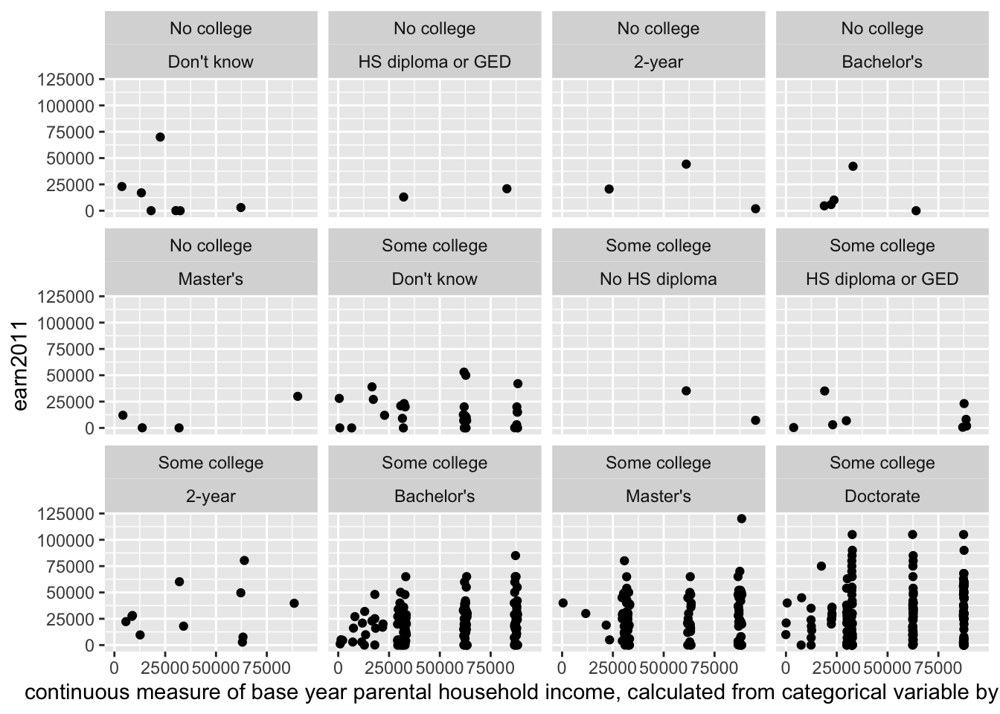
- We are also free to choose the number of rows or columns to display:
els_parphd %>%
filter(ever_college %in% c("No college", "Some college")
& ed_aspiration %in% c("Don't know","No HS diploma", "HS diploma or GED", "2-year", "Attend college, no Bachelors ", "Bachelor's", "Master's", "Doctorate") & parent_income < 150000 & earn2011 < 150000) %>%
ggplot(mapping = aes(x = parent_income, y = earn2011)) +
geom_point(position = "jitter") +
facet_wrap(facets = vars(ever_college, ed_aspiration), nrow = 4)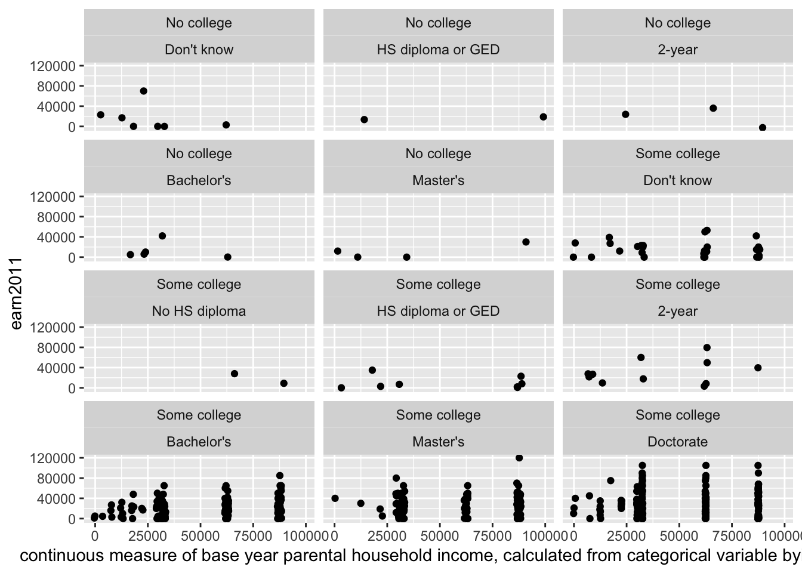
els_parphd %>%
filter(ever_college %in% c("No college", "Some college")
& ed_aspiration %in% c("Don't know","No HS diploma", "HS diploma or GED", "2-year", "Attend college, no Bachelors ", "Bachelor's", "Master's", "Doctorate") & parent_income < 150000 & earn2011 < 150000) %>%
ggplot(mapping = aes(x = parent_income, y = earn2011)) +
geom_point(position = "jitter") +
facet_wrap(facets = vars(ever_college, ed_aspiration), ncol = 5)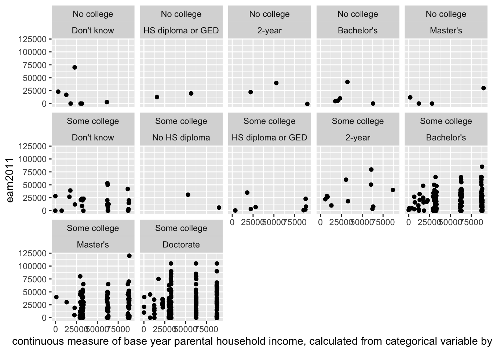
4 Customization
There are many ways to customize the display of our plot. For this section, we will build upon this scatterplot we saw earlier:
diamonds %>%
ggplot(mapping = aes(x = carat, y = price)) +
geom_point()
4.1 Labels
Functions to add title and axis labels:
ggtitle(): Add title of graphxlab(): Add x-axis labelylab(): Add y-axis label
Example: Adding title and axis labels
diamonds %>%
ggplot(mapping = aes(x = carat, y = price)) +
geom_point() +
ggtitle(label = 'Correlation between diamond carat and price') +
xlab(label = 'Carat') + ylab(label = 'Price')
Alternatively, the labs() function can be used to add all titles and labels:
?labs
# SYNTAX AND DEFAULT VALUES
labs(
...,
title = waiver(),
subtitle = waiver(),
caption = waiver(),
tag = waiver()
)Note: A waiver is a “flag” object, similar to NULL, that indicates the calling function should just use the default value. It is used in certain functions to distinguish between displaying nothing (NULL) and displaying a default value calculated elsewhere (waiver()).
Example: Adding title and axis labels using labs()
diamonds %>%
ggplot(mapping = aes(x = carat, y = price)) +
geom_point() +
labs(title = 'Correlation between diamond carat and price', x = 'Carat', y = 'Price')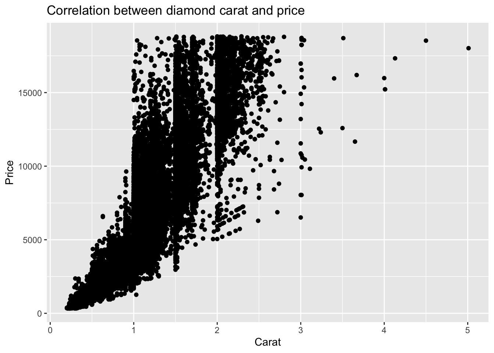
4.2 Scales
The scale_x_continuous() function is used to control the display of the x-axis when x is a continuous variable.
Similarly, the scale_y_continuous() function is to control the display of the y-axis when y is a continuous variable.
?scale_x_continuous
?scale_y_continuous
# SYNTAX AND DEFAULT VALUES
scale_x_continuous(
name = waiver(),
breaks = waiver(),
minor_breaks = waiver(),
n.breaks = NULL,
labels = waiver(),
limits = NULL,
expand = waiver(),
oob = censor,
na.value = NA_real_,
trans = "identity",
guide = waiver(),
position = "bottom",
sec.axis = waiver()
)
scale_y_continuous(
name = waiver(),
breaks = waiver(),
minor_breaks = waiver(),
n.breaks = NULL,
labels = waiver(),
limits = NULL,
expand = waiver(),
oob = censor,
na.value = NA_real_,
trans = "identity",
guide = waiver(),
position = "left",
sec.axis = waiver()
)- Description (from help file)
- “
scale_x_continuous()andscale_y_continuous()are the default scales for continuous x and y aesthetics.”
- “
- Arguments
name: The name of the scale. Used as the axis or legend title.labels: Custom labelling of the scales (i.e., ticks)limits: Limits of the scale (i.e., min/max values)position: The position of the axis. ('left'or'right'for y axes,'top'or'bottom'for x axes)
To force “decimal display” of numbers (rather than scientific notation), we can use the label_number() function like this:
scale_y_continuous(labels = label_number(...))
The label_number() function:
?label_number
# SYNTAX AND DEFAULT VALUES
label_number(
accuracy = NULL,
scale = 1,
prefix = "",
suffix = "",
big.mark = " ",
decimal.mark = ".",
trim = TRUE,
...
)- Description (from help file)
- “Use
label_number()force decimal display of numbers (i.e. don’t use scientific notation)”
- “Use
- Arguments
accuracy: A number to round to (e.g. use 0.01 to show 2 decimal places of precision)scale: A scaling factor (e.g., x will be multiplied by scale before formatting)prefix: Symbols to display before valuesuffix: Symbols to display after value
Example: Formatting numbers on the y-axis
We can use scale_y_continuous(), in conjunction with label_number() from the scales package, to format the numbers on the y-axis:
- Use
prefixto add$before the number - Use
suffixto addKafter the number - Use
scaleof1e-3to divide number by1000 - Use
accuracyof1to round number to the ones digit
diamonds %>%
ggplot(mapping = aes(x = carat, y = price)) +
geom_point() +
ggtitle(label = 'Correlation between diamond carat and price') +
xlab(label = 'Carat') + ylab(label = 'Price') +
scale_y_continuous(labels = label_number(prefix = '$', suffix = 'K', scale = 1e-3, accuracy = 1))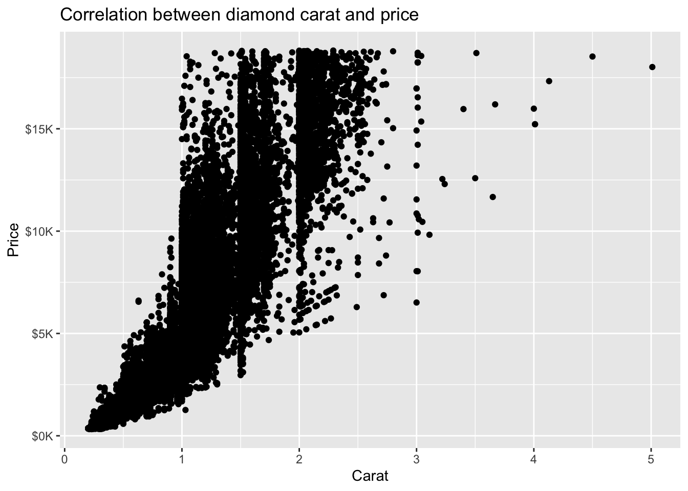
- Alternatively, we could specify scale like this:
scale = .001:
diamonds %>%
ggplot(mapping = aes(x = carat, y = price)) +
geom_point() +
ggtitle(label = 'Correlation between diamond carat and price') +
xlab(label = 'Carat') + ylab(label = 'Price') +
scale_y_continuous(labels = label_number(prefix = '$', suffix = 'K', scale = .001, accuracy = 1))
4.3 Colors
Below, we briefly overview some core concepts when using colors. This will be helpful when creating graphs.
4.3.1 HCL Color Space
The HCL color space is based on how the human perception works. “When using HCL, you can directly control the color (hue), the colorness (chroma) and the luminance (brightness).” (Why HCL from hcl wizard)
Hue
Hue refers to a specific color we see from one of the six Primary and Secondary colors in the Color Family– Yellow, Orange, Red, Violent, Blue, or Green. This means that Black, Gray, and White are not Hues.
- Example: Burgundy has a dominant hue of red.

Color
Color and Hue are used interchangeably, however, Color is used to describe hues, tints, shades, and tones.
- Example: Black, Gray, and White are colors.
Value
The value of a color is determined by how close the color is to Black or White. The closer a color is to Black, the darker the value and the closer a color is to White, the lighter the value.
- Example: It is helpful to use a grayscale to determine the value of a color.

- “All colors fall somewhere on the value scale between black and white” (Hue, Value, Chroma Explained from sensationalcolor.com)
Chroma
Chroma expresses the “purity” of a color. “Mixing a pure hue with black, white, gray, or any other color reduces its purity and lowers the chroma.” (Hue, Value, Chroma Explained from sensationalcolor.com)
Example: The image below displays the changes of a “pure” hue when adding the color white or black to it. As the red squares on the far left column are blended with white, they become lighter in value and lower in chroma and as the squares are blended with black, they become darker in value and lower in chroma.
Hue, Value, and Chroma 
Luminance
“Luminance is a measure to describe the perceived brightness of a colour. In other words, how bright is the colour from a reflected surface.” (Mixing Colors of equal Luminance- Part 1 author: Colin Shanley)
Example: The Hue-Chroma-Luminance (HCL) color scheme.


4.3.2 RColorBrewer Palettes
The RColorBrewer package is a helpful tool for managing colors in R. It offers several color palettes to choose from.
Visualization of color palettes (e.g., scale_color_brewer(palette = Pastel2)) 
Palettes are a combination of colors displayed together. In RColorBrewer, there are three types of palette scales: sequential, diverging, and qualitative.
Sequential: Sequential palettes are best suited for ordered data that progress from low to high i.e., where colors go from high to low chroma and/or luminance.
- Sequential palette names: Blues, BuGn, BuPu, GnBu, Greens, Greys, Oranges, OrRd, PuBu, PuBuGn, PuRd, Purples, RdPu, Reds, YlGn, YlGnBu, YlOrBr, YlOrRd
display.brewer.all(type = "seq")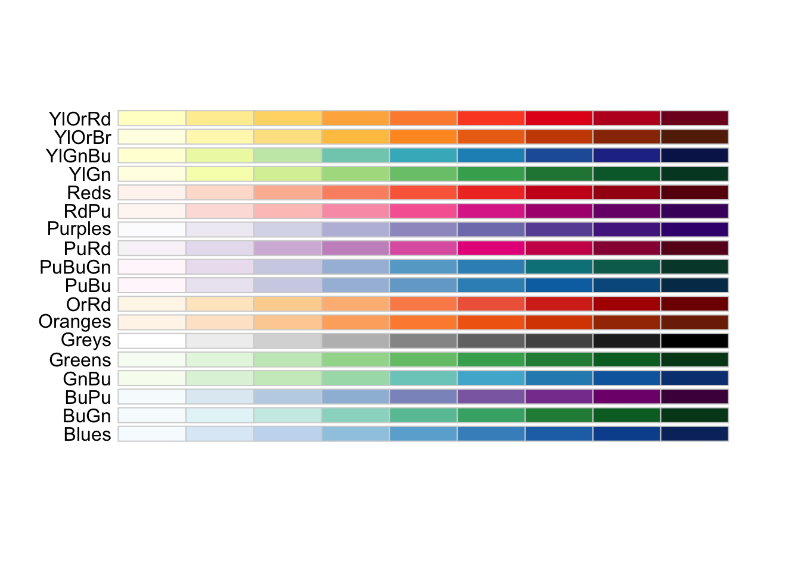
Diverging: Diverging palettes represent ordered data but in two directions. The middle represents a neutral value and the opposite ends represent two extremes. The hue distinguishes the direction of the values.
- Diverging palette names: BrBG, PiYG, PRGn, PuOr, RdBu, RdGy, RdYlBu, RdYlGn, Spectral
display.brewer.all(type = "div")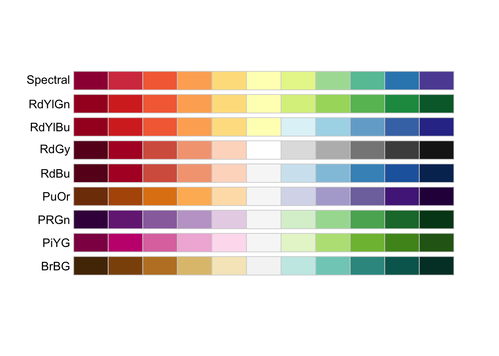
- Qualitative: Qualitative palettes are best suited for representing nominal or categorical data. There is not particular ordering of categories; every hue represents a different value where chroma and luminance are equal.
- Qualitative palette names: Accent, Dark2, Paired, Pastel1, Pastel2, Set1, Set2, Set3
display.brewer.all(type = "qual")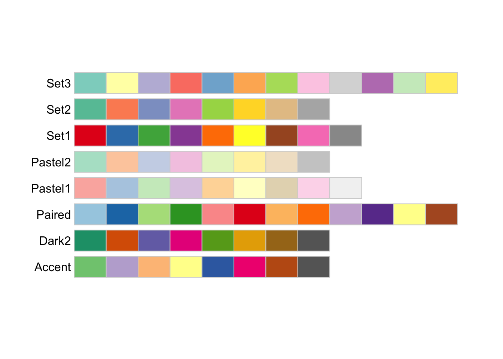
You can run the code below to identify color-blind-friendly palettes.
display.brewer.all(colorblindFriendly = TRUE)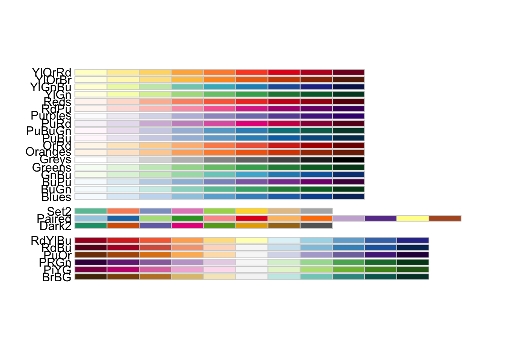
Sources: (R Color Brewer’s palettes); (HCL Color Space)
To select a specific color not part of the RColorBrewer package or other color packages, you can use this tool to select a color

4.3.3 scale_color_brewer() to select a ColorBrewer palette
Bringing it all together to apply the scale_color_brewer(), scale_fill_brewer(), and scale_color_gradient() functions to our graphs.
There are several ways to customize the color palettes of the plot. scale_color_brewer() is used when we want to color variables using a ColorBrewer palette, scale_fill_brewer() is used when we want to fill in the colors for a bar chart, and scale_color_gradient() is used when we want to color variables using a color gradient.
The scale_color_brewer() function
?scale_color_brewer
# SYNTAX AND DEFAULT VALUES
scale_color_brewer(
...,
type = "seq",
palette = 1,
direction = 1,
aesthetics = "colour"
)- Description (from help file)
- “The
brewerscales provides sequential, diverging and qualitative colour schemes from ColorBrewer”
- “The
- Arguments
palette: “If a string, will use that named palette. If a number, will index into the list of palettes of appropriate type. The list of available palettes can found in the Palettes section”direction: “Sets the order of colours in the scale. If 1, the default, colours are as output byRColorBrewer::brewer.pal(). If -1, the order of colours is reversed.”aesthetics: which aesthetic mappings thescale_color_brewer()function should apply to. Default isaesthetics = "colour"
Example: Customizing color palette of
We’ll color the points of the scatterplot by the variable color
- from
?diamonds, the variablecoloris described as “diamond colour, from D (best) to J (worst)”diamonds$coloris an “ordered” “factor” variable with factor levels shown below
diamonds %>% count(color)# A tibble: 7 × 2
color n
<ord> <int>
1 D 6775
2 E 9797
3 F 9542
4 G 11292
5 H 8304
6 I 5422
7 J 2808diamonds$color %>% class()[1] "ordered" "factor" diamonds$color %>% attributes()$class
[1] "ordered" "factor"
$levels
[1] "D" "E" "F" "G" "H" "I" "J"First, let’s create a scatterplot of the relationship between carat (x-axis) and price (y-axis) with color of points determined by the variable color and we’ll use the default display (i.e., don’t specify scale_color_brewer() function:
diamonds %>%
ggplot(mapping = aes(x = carat, y = price, color = color)) +
geom_point() +
ggtitle(label = 'Correlation between diamond carat and price') +
xlab(label = 'Carat') + ylab(label = 'Price') +
scale_y_continuous(labels = label_number(prefix = '$', suffix = 'K', scale = 1e-3, accuracy = 1))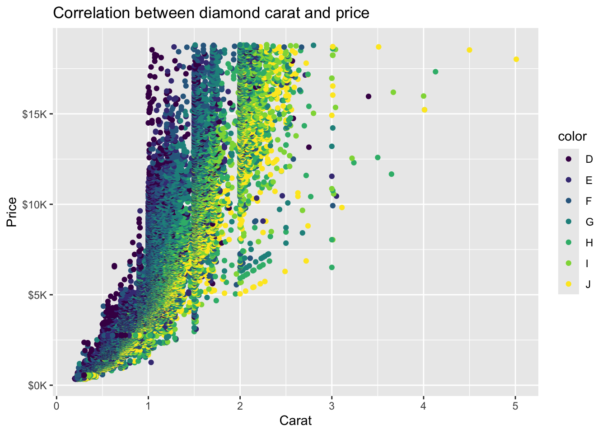
We can use scale_color_brewer() to customize the color palette. This also accepts other arguments for labeling including name to specify the legend title:
diamonds %>%
ggplot(mapping = aes(x = carat, y = price, color = color)) +
geom_point() +
ggtitle(label = 'Correlation between diamond carat and price') +
xlab(label = 'Carat') + ylab(label = 'Price') +
scale_y_continuous(labels = label_number(prefix = '$', suffix = 'K', scale = 1e-3, accuracy = 1)) +
scale_color_brewer(palette = 'Spectral', name = 'Diamond color')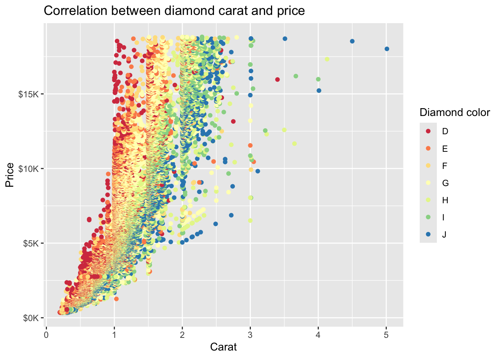
- Use
direction = -1to reverse the order of colors drawn from the (‘Spectral’) palette
diamonds %>%
ggplot(mapping = aes(x = carat, y = price, color = color)) +
geom_point() +
ggtitle(label = 'Correlation between diamond carat and price') +
xlab(label = 'Carat') + ylab(label = 'Price') +
scale_y_continuous(labels = label_number(prefix = '$', suffix = 'K', scale = 1e-3, accuracy = 1)) +
scale_color_brewer(palette = 'Spectral', direction = -1, name = 'Diamond color')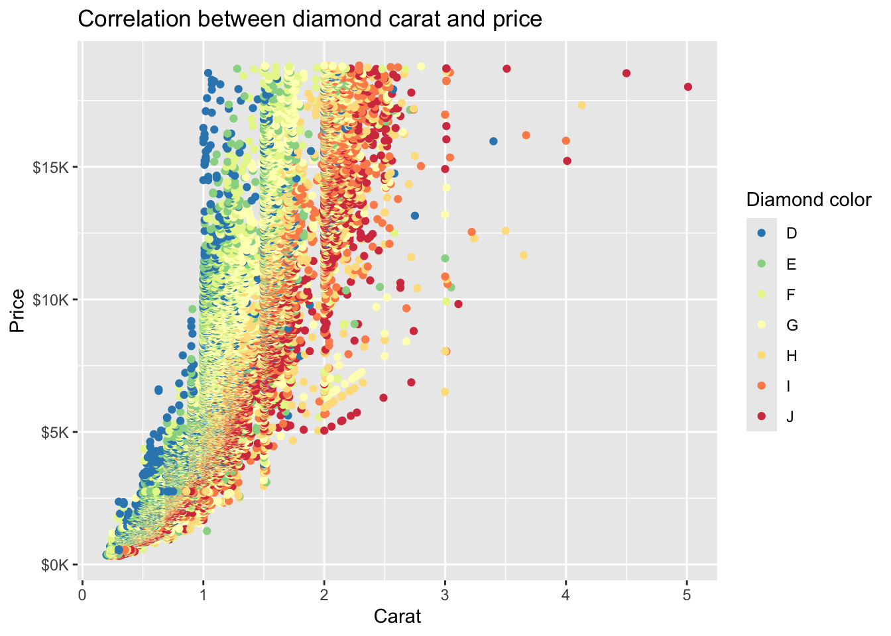
4.3.4 scale_fill_brewer() for discrete variables
To fill in the color of discrete variables in a bar chart, we can use the scale_fill_brewer() function.
The scale_fill_brewer() function:
?scale_fill_brewer
# SYNTAX AND DEFAULT VALUES
scale_fill_brewer(
...,
type = "seq",
palette = 1,
direction = 1,
aesthetics = "fill"
)- Arguments
...: “Other arguments passed on to discrete_scale(), continuous_scale(), or binned_scale(), for brewer, distiller, and fermenter variants respectively, to control name, limits, breaks, labels and so forth.”type: One of “seq” (sequential), “div” (diverging) or “qual” (qualitative)palette: If a string, will use that named palette. If a number, will index into the list of palettes of appropriate type. The list of available palettes can found in the Palettes section.direction: Sets the order of colours in the scale. If 1, the default, colours are as output by RColorBrewer::brewer.pal(). If -1, the order of colours is reversed.aesthetics: Character string or vector of character strings listing the name(s) of the aesthetic(s) that this scale works with. This can be useful, for example, to apply colour settings to the colour and fill aesthetics at the same time, via aesthetics = c(“colour”, “fill”).
Example: Fill in the colors in a bar chart
Using the els_v2 data frame from previously, we can use the scale_fill_brewer() function to fill in the colors of race/ethnicity in our bar chart below.
els_v2 %>%
ggplot(mapping = aes(x = f1race_v2)) +
geom_bar(mapping = aes(fill = f1race_v2)) +
scale_fill_brewer()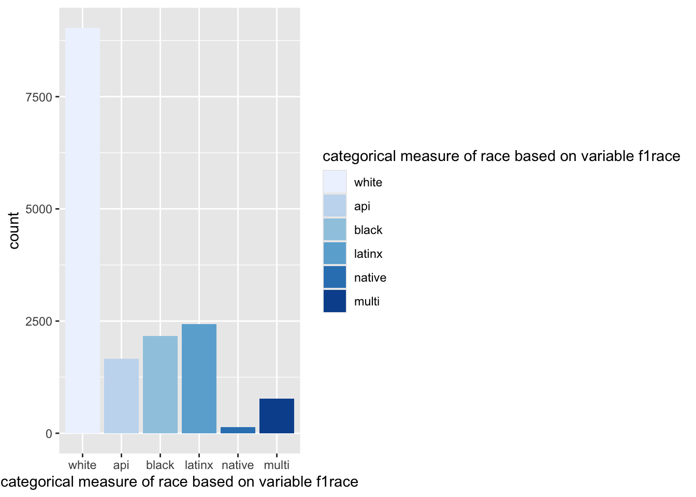
We can reverse the order of the colors by using the (direction = -1) argument
els_v2 %>%
ggplot(mapping = aes(x = f1race_v2)) +
geom_bar(mapping = aes(fill = f1race_v2)) +
scale_fill_brewer(direction = -1)We can select a specific palette from the ColorBrewer palette
#display.brewer.all(type = "qual") #qual color palettes
els_v2 %>%
ggplot(mapping = aes(x = f1race_v2)) +
geom_bar(mapping = aes(fill = f1race_v2)) +
scale_fill_brewer(palette = 'Accent')4.3.5 scale_color_gradient() for continuous variables
To color continuous variables, we need a color gradient, which is defined as “a gradual blending from one color to another” (Being Shady: How to Use Gradient Color in UX Design). A two-color gradient transitions from one color to another (e.g., red to blue), where one end is called the low end of the gradient and the other is the high end of the gradient. There can also be other gradients between more than 2 colors (e.g., red to yellow to blue).
The scale_color_gradient() function:
?scale_color_gradient
# SYNTAX AND DEFAULT VALUES
scale_color_gradient(
...,
low = "#132B43",
high = "#56B1F7",
space = "Lab",
na.value = "grey50",
guide = "colourbar",
aesthetics = "colour"
)- Description (from help file)
- “
scale_*_gradientcreates a two colour gradient (low-high)”
- “
- Arguments
low: Color for low end of the gradienthigh: Color for high end of the gradient
Example: Customizing color palette of continuous scale
Let’s color the points by the variable diamonds$depth, which represents “diamond depth percentage”
- from brilliance.com: “Depth percentage is the diamond’s depth [height] divided by the width of the diamond. This percentage dictates the overall proportions of the diamond, which in turn directly impact how light reflects off the facets in the stone.
- The variable
diamonds$depthis a continous variable
diamonds %>% select(depth) %>%
summarize_all(.funs = list(~ mean(x = ., na.rm = TRUE), ~ sd(x = ., na.rm = TRUE), ~ min(., na.rm = TRUE), ~ max(., na.rm = TRUE)))# A tibble: 1 × 4
mean sd min max
<dbl> <dbl> <dbl> <dbl>
1 61.7 1.43 43 79First, color scatterplot by depth using the default display palette:
diamonds %>%
ggplot(mapping = aes(x = carat, y = price, color = depth)) +
geom_point() +
ggtitle(label = 'Correlation between diamond carat and price') +
xlab(label = 'Carat') + ylab(label = 'Price') +
scale_y_continuous(labels = label_number(prefix = '$', suffix = 'K', scale = 1e-3, accuracy = 1))Next, let’s add scale_color_gradient() but we’ll manually insert the default values for low and high arguments:
diamonds %>%
ggplot(mapping = aes(x = carat, y = price, color = depth)) +
geom_point() +
ggtitle(label = 'Correlation between diamond carat and price') +
xlab(label = 'Carat') + ylab(label = 'Price') +
scale_y_continuous(labels = label_number(prefix = '$', suffix = 'K', scale = 1e-3, accuracy = 1)) +
scale_color_gradient(low = '#132B43', high = '#56B1F7')
We can use scale_color_gradient() to customize the color palette. This also accepts other arguments for labeling including name to specify the legend title and labels to customize the legend values:
diamonds %>%
ggplot(mapping = aes(x = carat, y = price, color = depth)) +
geom_point() +
ggtitle(label = 'Correlation between diamond carat and price') +
xlab(label = 'Carat') + ylab(label = 'Price') +
scale_y_continuous(labels = label_number(prefix = '$', suffix = 'K', scale = 1e-3, accuracy = 1)) +
scale_color_gradient(low = 'white', high = 'purple', name = 'Depth percentage',
labels = label_number(suffix = '%'))4.3.6 scale_color_manual() to select specific colors
If we want to customize our graph by selecting specific colors we could use scale_color_manual(). We could specify colors by their name (e.g., “red”, “darkgreen”), rgb(), Number, and hex color code (Dealing with colors in ggplot2)
The scale_color_manual() function:
?scale_color_manual
# SYNTAX AND DEFAULT VALUES
scale_colour_manual(
...,
values = aesthetic_values,
aesthetics = "colour",
breaks = waiver(),
na.value = "grey50"
)- Description (from help file)
- “These functions allow you to specify your own set of mappings from levels in the data to aesthetic values.”
- Arguments
values: a set of aesthetic values to map data values to.
Example: Customizing our graph color palette
Let’s go back to our example scatterplot of the relationship between carat (x-axis) and price (y-axis) with color of points determined by the variable color.
We can manually select colors by their name (An overview of color names in R).
diamonds %>%
ggplot(mapping = aes(x = carat, y = price, color = color)) +
geom_point() +
ggtitle(label = 'Correlation between diamond carat and price') +
xlab(label = 'Carat') + ylab(label = 'Price') +
scale_y_continuous(labels = label_number(prefix = '$', suffix = 'K', scale = 1e-3, accuracy = 1)) +
scale_color_manual(values = c("D" = "darkcyan",
"E" = "beige",
"F" = "darkorange",
"G" = "darkslateblue",
"H" = "darkmagenta",
"I" = "darkslategrey",
"J" = "brown4"),
name = 'Diamond color')If we want to be more specific, we could manually select colors by their Hex color code (Hex Code Selector).
diamonds %>%
ggplot(mapping = aes(x = carat, y = price, color = color)) +
geom_point() +
ggtitle(label = 'Correlation between diamond carat and price') +
xlab(label = 'Carat') + ylab(label = 'Price') +
scale_y_continuous(labels = label_number(prefix = '$', suffix = 'K', scale = 1e-3, accuracy = 1)) +
scale_color_manual(values = c("D" = "#E73813",
"E" = "#E7B713",
"F" = "#F3EF10",
"G" = "#45B39D",
"H" = "#0F85C8",
"I" = "#850FC8",
"J" = "#B90FCD"
),
name = 'Diamond color')We could also create an object assigning variable values with hex color codes.
For example, we want to plot the relationship between diamond carat (x-axis) and price (y-axis) with color of points determined by the variable `color`.First, let's plot without color.
diamonds %>%
ggplot(mapping = aes(x = carat, y = price)) +
geom_point() +
ggtitle(label = 'Correlation between diamond carat and price') +
xlab(label = 'Carat') + ylab(label = 'Price') +
scale_y_continuous(labels = label_number(prefix = '$', suffix = 'K', scale = 1e-3, accuracy = 1)) 
Next, we investigate the variable `color` and see that it has seven values, D-J.
diamonds %>% count(color)# A tibble: 7 × 2
color n
<ord> <int>
1 D 6775
2 E 9797
3 F 9542
4 G 11292
5 H 8304
6 I 5422
7 J 2808Then, we create the object `diamond_colors` and assign the values (e.g., D-J) of the variable `color` to any hex color codes of our choosing.
diamond_colors <- c("D" = "#00a866",
"E" = "#c10c79",
"F" = "#ffd859",
"G" = "#fa5b3d",
"H" = "#5083f0",
"I" = "#9370db",
"J" = "#1b6770")
diamond_colors D E F G H I J
"#00a866" "#c10c79" "#ffd859" "#fa5b3d" "#5083f0" "#9370db" "#1b6770" diamond_colors[1:3] #select the first three values (D,E,F) D E F
"#00a866" "#c10c79" "#ffd859" Lastly, we add the new object `diamond_colors` to the values argument from the `scale_color_manual` function.
diamonds %>%
ggplot(mapping = aes(x = carat, y = price, color = color)) +
geom_point() +
ggtitle(label = 'Correlation between diamond carat and price') +
xlab(label = 'Carat') + ylab(label = 'Price') +
scale_y_continuous(labels = label_number(prefix = '$', suffix = 'K', scale = 1e-3, accuracy = 1)) +
scale_color_manual(values = diamond_colors, #hex color code object we created
name = 'Diamond color') #name of legend4.3.7 Grayscale palette for journal manuscripts
Many journals require grayscale graphs or figures. You can use the scale_color_grey() function or the scale_fill_grey() function.
For example, we can plot the relationship between parent income and 2011 student earnings separately by race/ethnicity using the scale_color_grey() function.
The start and end arguments indicate the the starting and ending gray level in the palette where 0 indicates “black” and 1 indicates “white”.
els_parphd %>%
ggplot(mapping = aes(x = parent_income, y = earn2011)) +
geom_point(position = "jitter", mapping = aes(color = f1race_v2)) +
scale_color_grey()els_parphd %>%
ggplot(mapping = aes(x = parent_income, y = earn2011)) +
geom_point(position = "jitter", mapping = aes(color = f1race_v2)) +
scale_color_grey(start = 0.5, end = 0.75)If we want to graph the frequency count of the race/ethnicity of students in our data set, we can use the scale_fill_grey() function.
els_v2 %>%
ggplot(mapping = aes(x = f1race_v2)) +
geom_bar(mapping = aes(fill = f1race_v2)) +
scale_fill_grey()els_v2 %>%
ggplot(mapping = aes(x = f1race_v2)) +
geom_bar(mapping = aes(fill = f1race_v2)) +
scale_fill_grey(start = 0.8, end = 0.2)4.4 Themes
From “Complete Themes,” themes control “non-data display.”
- A theme controls all non-data display (i.e., stuff not determined by values of the data)
- Use
theme()“if you just need to tweak the display of an existing theme” - Use one of the following “complete themes” (preset themes) if you want to control all non-data display of a plot, e.g.:
theme_grey()(default)theme_bw()theme_light()theme_dark()theme_minimal()theme_classic()
Example: Using preset theme theme_minimal()
diamonds %>%
ggplot(mapping = aes(x = carat, y = price, color = color)) +
geom_point() +
ggtitle(label = 'Correlation between diamond carat and price') +
xlab(label = 'Carat') + ylab(label = 'Price') +
scale_y_continuous(labels = label_number(prefix = '$', suffix = 'K', scale = 1e-3, accuracy = 1)) +
scale_color_brewer(palette = 'Spectral', name = 'Color') +
theme_minimal()Example: Using preset theme theme_dark()
diamonds %>%
ggplot(mapping = aes(x = carat, y = price, color = color)) +
geom_point() +
ggtitle(label = 'Correlation between diamond carat and price') +
xlab(label = 'Carat') + ylab(label = 'Price') +
scale_y_continuous(labels = label_number(prefix = '$', suffix = 'K', scale = 1e-3, accuracy = 1)) +
scale_color_brewer(palette = 'Spectral', name = 'Color') +
theme_dark()
We can also use theme() to customize specific non-data components of the plot, including:
- Font family, size, color of text
- Color and gridlines of plot background
- Display and positioning of axes and labels
Example: Using custom theme
diamonds %>%
ggplot(mapping = aes(x = carat, y = price, color = color)) +
geom_point() +
ggtitle(label = 'Correlation between diamond carat and price') +
xlab(label = 'Carat') + ylab(label = 'Price') +
scale_y_continuous(labels = label_number(prefix = '$', suffix = 'K', scale = 1e-3, accuracy = 1)) +
scale_color_brewer(palette = 'Spectral', name = 'Color') +
theme(
text = element_text(size = 8),
panel.background = element_blank(),
plot.title = element_text(color = '#444444', size = 10, hjust = 0.5, face = 'bold'),
axis.ticks = element_blank(),
axis.title = element_text(face = 'bold'),
legend.title = element_text(face = 'bold'),
legend.key = element_blank(),
legend.key.size = unit(x = 0.5, units = 'cm')
)5 Exporting plots
The plots generated by ggplot can be exported as a PDF, PNG, or other file types. (From Creating and Saving Graphs - R Base Graphs)
When working with RMarkdown files, you can directly embed the code for the plot within code chunks to knit into the final document. But for R scripts, there may be times where you want to save the plot outputs to be used elsewhere.
There are many different kinds of file formats, including: (Saving a ggplot object as an image)
- vector graphics (pdf, svg, eps)
- raster graphics (jpg, png, tif)
The main difference is that vector graphics are scalable, meaning the image retains its quality when enlarged, so they are generally preferred over raster graphics when possible.
5.1 Exporting in RStudio
In RStudio, the generated plots will typically be displayed in the lower right panel. There is an Export button that allows you to save the plot as a PDF or PNG:

5.2 Exporting via R code
There are also various R functions, including jpeg(), png(), svg(), and pdf(), for exporting plots.
The steps for saving a plot:
Use one of the R functions to open a file
- Optional arguments include
heightandwidthfor specifying image dimension
- Optional arguments include
Create the plot
Close the file with
dev.off()Note: You have to run the code chuck or lines together for the code to work
Example: Exporting plot using pdf()
# Open the file
pdf(file = 'Rplot.pdf') #indicating the file type "pdf" and the name of the file "Rplot.pdf"
# Create the plot
diamonds %>%
ggplot(mapping = aes(x = carat, y = price, color = color)) +
geom_point()
# Close the file
dev.off()Example: Exporting plot using jpeg()
# Open the file
jpeg(filename = 'Rplot.jpg', width = 350, height = 350)
# Create the plot
diamonds %>%
ggplot(mapping = aes(x = carat, y = price, color = color)) +
geom_point()
# Close the file
dev.off()6 References
Wickham, Hadley. 2010. “A Layered Grammar of Graphics.” Journal of Computational and Graphical Statistics 19 (1): 3–28. https://doi.org/10.1198/jcgs.2009.07098.
Wickham, Hadley, and Garrett Grolemund. 2017. R for Data Science: Import, Tidy, Transform, Visualize, and Model Data. O’Reilly Media, Inc. https://r4ds.had.co.nz/.
Wilkinson, Leland. 1999. The Grammar of Graphics. Book. Statistics and Computing. New York: Springer.